El DOI de concepto 10.5281/zenodo.23004710 resuelve siempre a la versión más reciente archivada en Zenodo; cada versión tiene además el suyo (la 1.0.1: 10.5281/zenodo.23004711). La cita del programa aparece también en la sección Cómo citar de la portada de la app y al final de cada informe del Bloque 10.
PhenologyPro funciona por completo dentro de tu navegador. La serie de la estación que abres se lee en tu computadora y nunca se envía a ningún servidor. Puedes trabajar con los datos de una estación privada, de un ensayo en curso o de una tesis sin que nada de eso salga de tu equipo. El programa tampoco necesita internet: una vez copiado, funciona con la máquina desconectada.
Las ilustraciones, los diagramas y las capturas de pantalla de este manual son originales: se generaron con el propio programa o con código escrito para el manual. Las seis series climáticas de ejemplo que trae el programa —y con las que se ilustra este manual— son sintéticas y ficticias: reproducen el orden de magnitud y la estacionalidad de seis climas de México, pero no son observaciones de ninguna estación real, y así lo dice la app cada vez que se cargan. Los coeficientes de cultivo, las fracciones de agotamiento y los factores de respuesta al agua provienen de las tablas públicas de la FAO (Documentos de Riego y Drenaje 24, 33 y 56); los requerimientos térmicos del catálogo son orientativos y el programa insiste en calibrarlos con fechas observadas.
El manual sigue el mismo orden que la app: diez bloques numerados que se recorren de izquierda a derecha en la barra de arriba. Cada capítulo explica un bloque y lleva su mismo número —el capítulo 5 es el Bloque 5, y sus secciones, figuras y tablas se numeran 5.1, 5.2…—. Cada uno empieza con la idea agroclimática que el bloque necesita, sigue con lo que la pantalla calcula y cómo se lee, y termina con los avisos que el bloque puede mostrar y qué hacer con ellos. Esta introducción no lleva número: sus secciones van como I.1, I.2…
El color del bloque aparece en la apertura de su capítulo, en el número de cada sección, en la pestaña del borde de la hoja y en el índice, y es el mismo de la franja de la portada. Así sabes de un vistazo en qué parte de la app estás.
| Bloque | Nombre en la app | Qué hace |
|---|---|---|
| 1 | Inicio | Portada, el motor agroclimático completo, dos laboratorios que calculan de verdad, veinte métodos, la teoría en lenguaje claro y las referencias |
| 2 | Datos climáticos | El sitio, la serie diaria de la estación (pegada, desde archivo o de ejemplo), el papel de cada columna, el control de calidad y el proyecto |
| 3 | Clima del sitio | Normales, climograma de Walter–Lieth, régimen de lluvias, heladas con sus fechas al 50, 20 y 10 % de riesgo, índices de aridez, balance climático y Köppen–Geiger |
| 4 | Grados-día | Tiempo térmico desde la siembra con seis métodos y cuatro cortes, año por año, el calendario térmico y el mapa por fecha de siembra |
| 5 | Evapotranspiración | Penman–Monteith FAO-56 con lo que haya (estimando lo que falta y anotándolo), Hargreaves, Priestley–Taylor, Turc y Thornthwaite, comparados y calibrados |
| 6 | Balance hídrico | El balance diario de la zona radical de FAO-56 con la curva de Kc, en temporal, año por año, por etapa y por fecha de siembra; el rendimiento relativo de FAO-33 |
| 7 | Riego | Cuándo y cuánto regar con la regla que elijas; láminas netas y brutas, cuatro estrategias comparadas, riego por mes, capacidad de diseño y ahorro |
| 8 | Fenología | Las etapas BBCH fechadas por tiempo térmico, la calibración con fechas observadas, el frío invernal de los frutales y el fotoperiodo |
| 9 | Riesgos y escenarios | Helada y golpe de calor por etapa, la ventana de siembra que junta calor, agua y heladas, y los escenarios de +1, +2 y +3 °C |
| 10 | Informe | El catálogo de figuras hasta 900 ppp, el informe que se abre en cualquier navegador y el paquete .zip que reproduce el estudio |
Aclaraciones y consejos prácticos que ahorran tiempo.
Lo que puede cambiar tus conclusiones si se pasa por alto.
La idea detrás de un cálculo, sin fórmulas innecesarias.
Un caso con los datos incluidos en el programa, paso a paso.
| Si el resultado cae en este caso… | entonces esta es la lectura recomendada. |
Son guías para interpretar, no leyes: lo que sabes del cultivo, del cultivar y de la parcela siempre manda.
| Así se escribe | Significa |
|---|---|
| Armar la serie y revisarla → | Un botón, casilla o menú de la app, con su texto tal como aparece en pantalla en español. |
| Bloque 5›Qué ETo usarán los bloques siguientes | Una ruta: abre lo primero y dentro busca lo segundo. |
tmax, .csv | Un nombre de columna, de archivo o un valor que se escribe tal cual. |
| ETo, ETc, Kc, ADT, AFA · ETo, ETc, Kc, TAW, RAW | Siglas en español; entre paréntesis, cuando ayuda, la sigla inglesa de la literatura (la app en inglés usa las segundas). |
| 1,450 °C·d · 3.74 mm/día · 20 may | Grados-día con el punto de multiplicación, láminas en milímetros, fechas con el día y el mes abreviado, como en la app. |
| P20 · P80 · mediana | Los percentiles 20 y 80 entre los años del registro y el valor central: la app resume así casi todo lo que calcula año por año. |
| ● ◐ — | Disponible · disponible en parte o con condiciones · no aplica. |
Todos los resultados que aparecen en el texto se obtuvieron corriendo la app con la serie de ejemplo «Bajío semiárido (1 800 m)», 20 años, sin errores sembrados, y se copiaron de la pantalla. Si repites los pasos con esa misma serie, debes ver los mismos números: los ejemplos se generan con una semilla fija y todos los cálculos son deterministas. Cuando un capítulo usa otra serie —el «Valle templado» para las heladas y el frío invernal, o el ejemplo con errores sembrados para el control de calidad— lo dice antes de dar la cifra.
Qué es el programa, qué preguntas de la agroclimatología y la fenología responde, qué datos acepta y cómo se recorre de principio a fin. Incluye las cinco ideas que sostienen todo lo demás —la planta cuenta calor, la atmósfera pide agua, el suelo es una cubeta, el registro es la probabilidad y lo que no se mide se estima y se declara— y una lista honesta de lo que el programa no hace.
PhenologyPro es una plataforma para hacer el estudio agroclimático de un sitio y el calendario de un cultivo de la serie de la estación al informe: limpia los datos diarios, describe el clima, acumula el calor que la planta necesita, calcula cuánta agua pide la atmósfera y cuánta queda en el suelo, arma el calendario de riego, fecha las etapas fenológicas, cuenta el frío del invierno, mide el riesgo de helada y de calor, encuentra la ventana de siembra, prueba qué pasaría con un clima más cálido y entrega un informe con figuras, métodos redactados y un paquete que lo reproduce.
Todo ocurre dentro del navegador. No hay que instalar nada, no se necesita saber programar y los datos no salen de la computadora. Está escrito para agrónomos, tesistas y técnicos de campo: sabe que una estación casi nunca mide radiación ni humedad y que aun así hay que calcular la evapotranspiración; que la respuesta a «¿cuándo siembro?» no es una fecha sino una probabilidad; que un requerimiento térmico sacado de un manual extranjero hay que calibrarlo con las fechas de la propia parcela; y que el resultado de un estudio se defiende con el número, con la figura y con el método escrito, no con la pantalla.
Cada bloque de la app contesta una pregunta que un productor, un asesor o un tesista se hace de verdad. Estas son, en el orden en que se recorren:
| Bloque | La pregunta | Con qué la contesta |
|---|---|---|
| 2 | ¿Sirven mis datos? ¿Qué me permiten calcular? | Lectura de la serie, control de calidad, cobertura por variable y la lista de lo que esos datos permiten |
| 3 | ¿Cómo es el clima de este sitio? ¿Cuándo llueve, cuándo hiela? | Normales, climograma, inicio y fin de las lluvias, fechas de helada al 50, 20 y 10 % de riesgo, índices y clasificación |
| 4 | ¿Cuánto calor junta el cultivo desde esta fecha? ¿Le alcanza para madurar? | Grados-día año por año, días a la meta con su dispersión, mapa por fecha de siembra |
| 5 | ¿Cuánta agua pide la atmósfera aquí? ¿Me fío de la ETo sin radiación ni humedad? | Penman–Monteith con lo que haya, cuatro métodos simples, calibración local y la frase que dice qué se estimó |
| 6 | En temporal, ¿cuánta agua le falta al cultivo y cuánto rendimiento pierde? | Balance diario de la zona radical, días con estrés, rendimiento relativo de FAO-33 por año y por etapa |
| 7 | ¿Cuándo y cuánto regar? ¿Qué capacidad necesita el sistema? | Calendario con la regla que elijas, láminas netas y brutas, cuatro estrategias, ETc máxima de diseño y ahorro contra la costumbre |
| 8 | ¿Cuándo florece y cuándo madura? ¿Junta el invierno el frío que el frutal necesita? | Etapas BBCH fechadas por tiempo térmico con su dispersión, calibración con fechas observadas, porciones de frío, unidades Utah y horas frío |
| 9 | ¿Cuándo conviene sembrar para que todo salga bien a la vez? ¿Y si el clima se calienta? | Helada y calor por etapa, la ventana de siembra con una sola probabilidad de éxito, escenarios de +1, +2 y +3 °C |
| 10 | ¿Cómo entrego esto en una tesis, un artículo o un dictamen? | Figuras en el formato y la resolución que pidan, informe con métodos redactados y referencias, paquete reproducible |
No hace falta saber agroclimatología para usar la app, pero hay cinco ideas que vuelven una y otra vez. Entenderlas hace que los resultados dejen de ser números y se vuelvan argumentos.
El desarrollo de un cultivo —emerger, echar hojas, florecer, madurar— avanza con la temperatura, no con el calendario. Un maíz sembrado en abril en un valle fresco y otro sembrado en mayo en el Bajío no maduran a los mismos días, pero sí tras acumular más o menos los mismos grados-día: la suma, día tras día, de lo que la temperatura media excede de una temperatura base por debajo de la cual la planta no crece. Por eso la app fecha las etapas por tiempo térmico, por eso la misma fecha de siembra da calendarios distintos en años distintos, y por eso el requerimiento de una etapa se puede medir en la propia parcela con dos o tres años de fechas observadas.
La evapotranspiración de referencia (ETo) es cuánta agua evaporaría y transpiraría un pasto bien regado bajo el clima del sitio: depende de la radiación, la temperatura, la humedad y el viento, y no del cultivo. Penman–Monteith FAO-56 es la forma de calcularla que acepta todo el mundo. El cultivo entra después, con un coeficiente Kc que sube de la siembra al dosel completo y baja hacia la madurez: la demanda real es ETc = Kc × ETo. Separar las dos cosas es lo que permite usar la misma ETo para cualquier cultivo y comparar sitios entre sí.
Entre la capacidad de campo y el punto de marchitez, el suelo guarda una lámina de agua —el agua disponible total— de la que el cultivo puede tomar sin esfuerzo solo una fracción, el agua fácilmente aprovechable. La lluvia y el riego llenan la cubeta; la ETc la vacía; lo que sobra cuando está llena se percola. Cuando el agotamiento pasa del agua fácilmente aprovechable, la planta transpira menos de lo que la atmósfera pide, y esa diferencia es el estrés que cuesta rendimiento. Todo el balance hídrico y todo el calendario de riego de la app son esa cubeta llevada día a día.
La app no pronostica el año que viene: recorre cada año del registro como si el cultivo se hubiera sembrado en él, y resume lo que pasó con la mediana y los percentiles 20 y 80. «Madura en 127 días (P20 123, P80 133)» quiere decir que en el 60 % central de los años tardó entre 123 y 133 días. «Ventana con 80 % de éxito» quiere decir que en cuatro de cada cinco años del registro todo salió bien a la vez. Por eso importa tanto cuántos años completos tiene la serie, y por eso la app lo dice al principio y lo repite en el informe.
Casi ninguna estación agrícola mide radiación; muchas no miden humedad ni viento. FAO-56 dice exactamente cómo estimar cada una de esas variables a partir de la temperatura, y la app lo hace sin pedir permiso, pero cuenta los días en que lo hizo y redacta una frase que dice qué se estimó, con qué coeficiente y en qué porcentaje de los días. Esa frase pasa tal cual al informe. Un resultado con variables estimadas no es peor: es un resultado honesto sobre lo que se sabe y lo que se supuso.
.csv o .txt (incluido el formato con «Nulo» del Servicio Meteorológico Nacional), o se toma de uno de los seis ejemplos. Con temperatura máxima y mínima ya se puede hacer casi todo..json: la serie limpia con el sitio, tal como salió del Bloque 2..html que se abre en cualquier navegador y se imprime a PDF, con el resumen, una sección por bloque calculado, los métodos redactados a partir de lo que realmente se corrió, las referencias y el registro de cálculo..zip con el informe, el proyecto, los parámetros, los cuadros y las figuras. Quien lo reciba puede rehacer el estudio completo.Una computadora con un navegador reciente —Edge, Chrome, Firefox o Safari de los últimos dos o tres años— y la carpeta del programa. No hay instalación: se copia la carpeta y se abre index.html con doble clic. También funciona desde una memoria USB y en una computadora sin internet.
La serie limpia y el sitio se guardan en el navegador de esa computadora (en el almacenamiento local), de modo que al volver a abrir la app aparece el mismo estudio. Es solo una comodidad: el respaldo de verdad es el proyecto .json que se descarga desde el Bloque 2, que se abre en cualquier otra máquina. El botón Olvidar esta serie borra lo guardado.
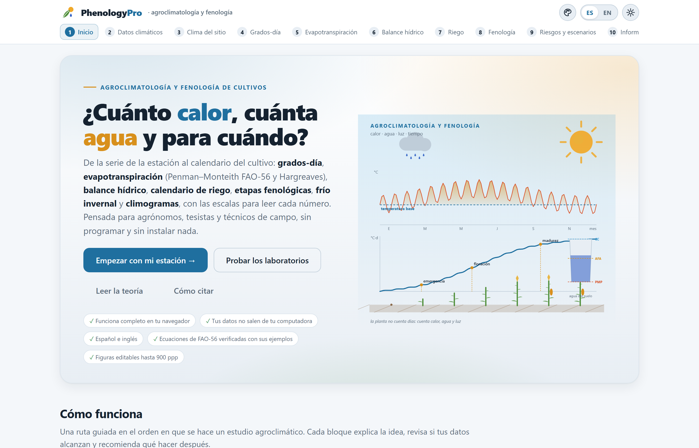
| Elemento | Para qué sirve |
|---|---|
| La barra de pasos | Diez botones numerados, siempre visibles. El paso activo va en azul. Se puede saltar a cualquiera en cualquier momento; el bloque que necesita algo que todavía no existe lo dice y ofrece el botón para ir a resolverlo. |
| Las tarjetas | Cada bloque se divide en tarjetas numeradas —«1 · El sitio», «2 · La serie diaria»…— que se leen de arriba abajo. Las primeras son los parámetros; las siguientes, los resultados. |
| Los recuadros de resultados | Una fila de cifras grandes con su etiqueta y una línea de contexto debajo. Es el resumen de la tarjeta: lo que se diría en una frase. |
| El signo ? | Junto a un título, una cifra o una columna, abre una ficha de ayuda: qué mide, cómo se lee, la escala que dice si el valor es bajo o alto y el error más común. Hay 49 fichas; cada bloque termina con su guía de interpretación, que las reúne. |
| Las etiquetas de escala | Al lado de muchos números aparece una palabra en color —moderada, aceptable, calibrar, pérdida severa—. Sale de la escala de la ficha correspondiente. El color va del verde al rojo. |
| El botón ⤓ de cada figura | Aparece al pasar el cursor por la esquina de una figura. Abre el menú de exportación: PNG, JPG o SVG; 150 a 900 ppp; claro u oscuro; con título y nota. |
| El estudio de figuras | El botón de la paleta en la barra superior. Cambia la paleta (nueve, entre ellas la de Okabe–Ito para daltónicos y una en grises para imprimir), la fuente, las escalas y el fondo de todas las figuras a la vez, en pantalla y en lo que se exporta. |
| ↻ Recalcular | Cada bloque recalcula solo al cambiar un parámetro; el botón fuerza el cálculo cuando se ha escrito algo a mano. |
| Continuar al Bloque N → | Al pie de cada bloque. Lleva al siguiente cuando ya hay lo que necesita. |
| Los mensajes | Bandas de color bajo una tarjeta: azul para información, ámbar para un aviso, rojo para un error que impide seguir. Cada capítulo termina con la lista de los de su bloque. |
El Bloque 2 trae seis series diarias de ejemplo, de 1 a 20 años, generadas por el propio programa con una semilla fija. Son sintéticas y ficticias: imitan la estacionalidad, la amplitud térmica, el régimen de lluvias y la frecuencia de heladas de seis climas de México, con el ruido de un año a otro que tiene una serie real, pero no son observaciones de ninguna estación y no deben citarse como tales. Sirven para aprender la app, para probar un cultivo en un clima que no es el tuyo y para reproducir este manual.
| Ejemplo | Latitud, altitud | Cómo es | Para qué sirve en el manual |
|---|---|---|---|
| Valle templado (2 250 m) | 19.5°, 2 250 m | Cwb; 15.5 °C de media, 609 mm en verano; hiela en 16 de 20 inviernos | Heladas (cap. 3), frío invernal (cap. 8) |
| Costa cálida seca (50 m) | costera, cálida | Lluvia escasa de verano, ETo alta, sin heladas | — |
| Trópico húmedo (10 m) | baja, húmeda | Lluvia abundante casi todo el año, amplitud térmica pequeña | — |
| Altiplano frío (2 650 m) | alta, fría | Heladas frecuentes, ciclo térmico corto | — |
| Bajío semiárido (1 800 m) | 20.6°, 1 800 m | BSh; 18.5 °C, 546 mm concentrados de junio a octubre; casi sin heladas | El ejemplo principal de todos los capítulos |
| Norte seco extremoso (1 400 m) | norte, continental | Veranos muy calientes, inviernos con helada, lluvia escasa | — |
Cada ejemplo puede cargarse con errores sembrados: valores imposibles, máximas por debajo de mínimas, picos, tramos planos y huecos. Es la mejor forma de ver qué hace el control de calidad del Bloque 2 antes de confiarle una serie real.
El orden de los bloques es el orden en que se hace un estudio agroclimático. No es obligatorio hacerlo completo: un estudio de heladas termina en el Bloque 3; uno de calendario de riego necesita los Bloques 2, 5, 6 y 7; uno de fenología, los Bloques 2, 4 y 8. Lo que un bloque necesita de otro lo calcula solo al abrirlo, y si lo que necesita todavía no existe lo dice y ofrece el botón para ir por ello.
Si cambias la serie en el Bloque 2, todo se recalcula. Si cambias la ETo elegida en el Bloque 5, el balance y el riego se rehacen al abrirlos. Si cambias el cultivo en el Bloque 6, el Bloque 7 lo hereda; si cambias las etapas en el Bloque 8, el Bloque 9 las toma. El informe del Bloque 10 se redacta con lo que exista en ese momento: por eso conviene generarlo al final y volver a generarlo si se tocó algo.
.xlsx no se abre a propósito: se guarda como .csv o se copia y pega el bloque de celdas. La app no carga una sola línea de código que no sea propia, y eso es lo que le permite abrirse con doble clic y funcionar sin internet.La primera pantalla no es una portada decorativa: trae el motor completo del programa en dos laboratorios que calculan de verdad, el catálogo de los veinte métodos con su fuente, la comparación de los cinco métodos de evapotranspiración, la teoría indispensable en ocho lecturas cortas y las cuarenta referencias detrás de los cálculos. Se puede aprender agroclimatología aquí antes de cargar un solo dato.
Al abrir index.html aparece el Bloque 1 con una pregunta —¿Cuánto calor, cuánta agua y para cuándo?— que resume lo que el programa contesta, y una ilustración con las tres cosas que la planta cuenta: la temperatura diaria oscilando sobre la temperatura base, la curva de grados-día acumulados con sus etapas y la cubeta del agua del suelo entre la capacidad de campo, el agua fácilmente aprovechable y el punto de marchitez. Debajo, dos botones: Empezar con mi estación →, que lleva al Bloque 2, y Probar los laboratorios, que baja a la sección siguiente.
Cinco sellos bajo los botones resumen las promesas del programa: funciona completo en el navegador, los datos no salen de la computadora, español e inglés, ecuaciones de FAO-56 verificadas con sus ejemplos resueltos y figuras editables hasta 900 ppp. Cada una se explica en algún capítulo de este manual; la de las ecuaciones se comprueba abriendo tests/index.html.
Es el único bloque que funciona sin serie. Los laboratorios generan el año de clima de uno de los seis sitios de práctica y calculan sobre él con las mismas funciones que después usarán con tu estación. Por eso es el lugar para entender un método antes de aplicarlo: se mueve un control y se ve qué cambia.
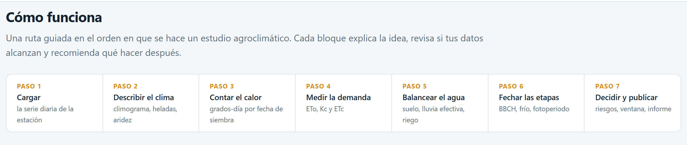
Debajo de la franja, nueve tarjetas —una por bloque, del 2 al 10— dicen qué hace cada uno y llevan a él con un clic. Cada tarjeta tiene su etiqueta (datos, clima, calor, agua, suelo, riego, fenología, riesgo, informe) y una ilustración propia. La misma lista, con la pregunta que cada bloque contesta, está en la sección I.2 de la introducción.
El primer laboratorio responde la pregunta central del programa con un año sintético: sembrando tal cultivo en tal fecha, ¿le alcanza el calor para madurar antes de la primera helada? Se elige un sitio de práctica, un cultivo del catálogo, el método de cálculo y el corte del umbral superior; tres deslizadores fijan la fecha de siembra, la temperatura base y el umbral superior. Al cambiar cualquiera de ellos la app vuelve a generar el año, acumula los grados-día día por día y fecha cada etapa.
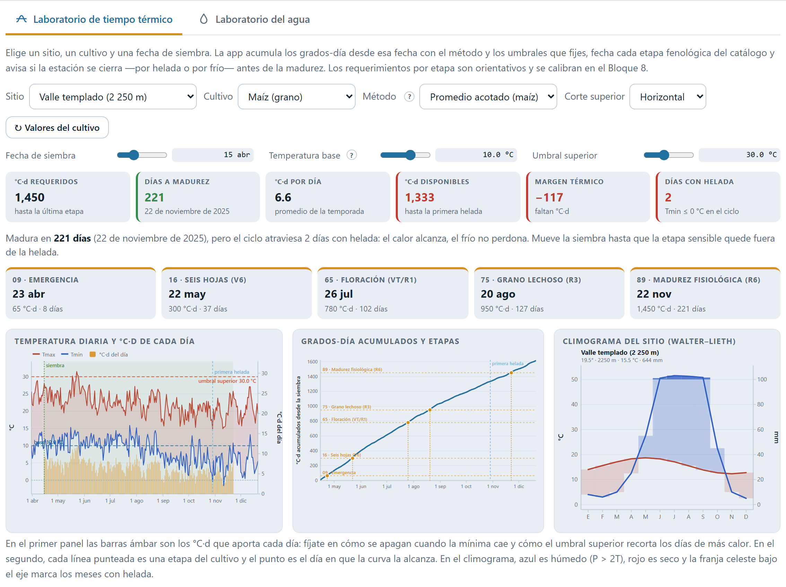
| Recuadro | Qué dice | En el ejemplo |
|---|---|---|
| °C·d requeridos | La suma térmica hasta la última etapa del catálogo (la madurez fisiológica), en grados-día. | 1,450 °C·d |
| Días a madurez | Cuántos días tarda el año sintético en juntar esa suma desde la siembra, y en qué fecha cae. | 221 días · 22 nov |
| °C·d por día | El promedio de la temporada: la velocidad a la que ese sitio «paga» el calor. | 6.6 |
| °C·d disponibles | Los que se acumulan desde la siembra hasta la primera helada del otoño: el techo del sitio para esa fecha. | 1,333 |
| Margen térmico | Disponibles menos requeridos. Negativo quiere decir que el frío llega antes de la madurez. | −117 (faltan) |
| Días con helada | Los días con Tmin ≤ 0 °C dentro del ciclo. | 2 |
«Madura en 221 días (22 de noviembre de 2025), pero el ciclo atraviesa 2 días con helada: el calor alcanza, el frío no perdona. Mueve la siembra hasta que la etapa sensible quede fuera de la helada.»
A 2 250 m el maíz de 1,450 °C·d es marginal: junta el calor, pero tarde. Las etapas lo dicen: emergencia el 23 de abril, seis hojas el 22 de mayo, floración el 26 de julio, grano lechoso el 20 de agosto y madurez el 22 de noviembre, ya con heladas encima. Mover el deslizador de la fecha hacia marzo, o bajar la meta con un cultivar precoz, cambia el veredicto en el acto. Ese es el uso del laboratorio: ver la sensibilidad antes de tomar la decisión con la serie real en los Bloques 4, 8 y 9.
Todos calculan lo mismo —el área del día por encima de la base— pero suponen una forma distinta de la temperatura a lo largo de las 24 horas. El promedio usa (Tmax + Tmin)/2 − base; el promedio acotado del maíz acota primero Tmax a 30 y Tmin a 10; el triángulo y el seno integran una onda triangular o senoidal entre la mínima y la máxima, y sus versiones dobles usan la mínima del día siguiente para la segunda mitad. El corte del umbral superior —horizontal, vertical, intermedio o ninguno— decide qué pasa con las horas más calientes que el umbral. El Bloque 4 tiene una tarjeta entera para ver cuánto cambia el resultado de un método a otro.
La pestaña Agua del mismo bloque hace, sobre el mismo año sintético, el balance hídrico completo del Bloque 6 y el calendario de riego del Bloque 7. Se eligen el sitio, el cultivo, el suelo, el método de ETo (Hargreaves o Penman–Monteith) y si hay riego (Temporal (sin riego) o Automático al agotar el AFA); los deslizadores mueven la fecha de siembra, el umbral de riego, la eficiencia y el agotamiento inicial del suelo.
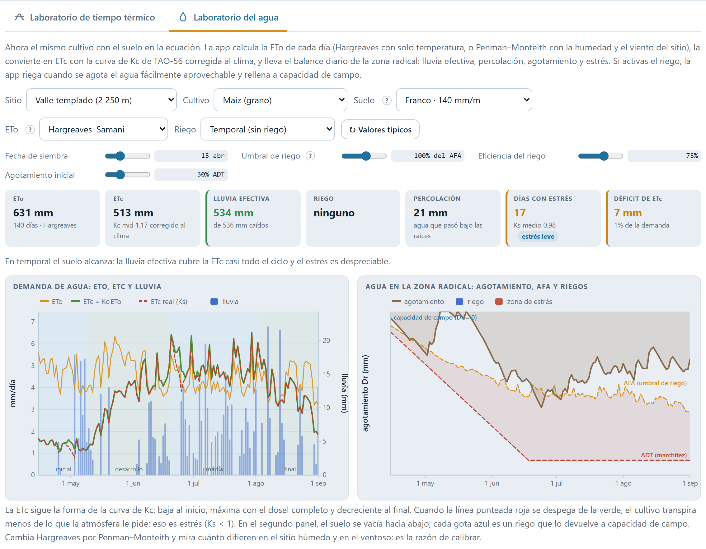
ETo de 631 mm en los 140 días del ciclo; ETc de 513 mm con un Kc medio de 1.17 ya corregido al clima; lluvia efectiva de 534 mm de los 536 caídos; 21 mm de percolación; 17 días con estrés con Ks medio de 0.98 (estrés leve) y un déficit de 7 mm, el 1 % de la demanda. El veredicto: «En temporal el suelo alcanza: la lluvia efectiva cubre la ETc casi todo el ciclo y el estrés es despreciable.» Cambiar el sitio a la Costa cálida seca, o el suelo a arena, muestra al instante el otro extremo.
El año sintético del laboratorio es uno solo, generado con semilla fija. Sirve para entender la mecánica, no para decidir: un año no tiene probabilidad. La decisión se toma en los bloques 4 a 9, donde la serie real se recorre año por año y cada resultado lleva su mediana y sus percentiles.
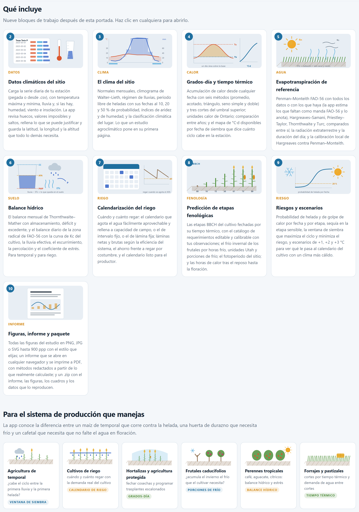
La franja Para el sistema de producción que manejas traduce los bloques a seis situaciones reales. Cada tarjeta plantea la pregunta típica de ese sistema y dice qué bloques la contestan:
| Sistema | La pregunta típica | Bloques |
|---|---|---|
| Agricultura de temporal | ¿Cabe el ciclo entre la primera lluvia y la primera helada? | 3, 4, 6, 9 |
| Cultivos de riego | ¿Cuándo y cuánto regar con la demanda real del cultivo? | 5, 6, 7 |
| Hortalizas y agricultura protegida | Fechar cosechas y programar trasplantes escalonados | 4, 8 |
| Frutales caducifolios | ¿Acumula el invierno el frío que el cultivar necesita? | 8, 9 |
| Perennes tropicales | Café, aguacate, cítricos: balance hídrico y estrés | 5, 6, 7 |
| Forrajes y pastizales | Cortes por tiempo térmico y demanda de agua entre cortes | 4, 6 |
La galería Métodos que cubre es el inventario del motor: veinte tarjetas, cada una con una ilustración, una línea que dice qué hace y la fuente, y el bloque donde se usa. El filtro de arriba las agrupa en cinco familias.
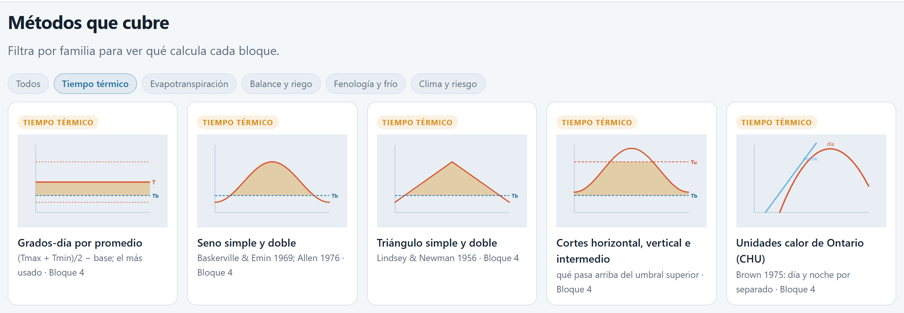
| Familia | Métodos | Bloques |
|---|---|---|
| Tiempo térmico | Grados-día por promedio; seno simple y doble; triángulo simple y doble; cortes horizontal, vertical e intermedio; unidades calor de Ontario (CHU) | 4, 8 |
| Evapotranspiración | Penman–Monteith FAO-56; Hargreaves–Samani; Priestley–Taylor; Thornthwaite mensual (y Turc, en el Bloque 5) | 3, 5 |
| Balance y riego | Coeficiente de cultivo Kc en cuatro etapas corregido al clima; balance de Thornthwaite–Mather; balance diario de la zona radical (FAO-56, cap. 8); calendarización del riego | 3, 6, 7 |
| Fenología y frío | Fotoperiodo con crepúsculo civil; horas frío y unidades Utah; modelo dinámico (porciones de frío) | 8, 9 |
| Clima y riesgo | Climograma de Walter–Lieth; índices de aridez (PNUMA, De Martonne, Lang, Thornthwaite); probabilidad de helada; ventana de siembra | 3, 9 |
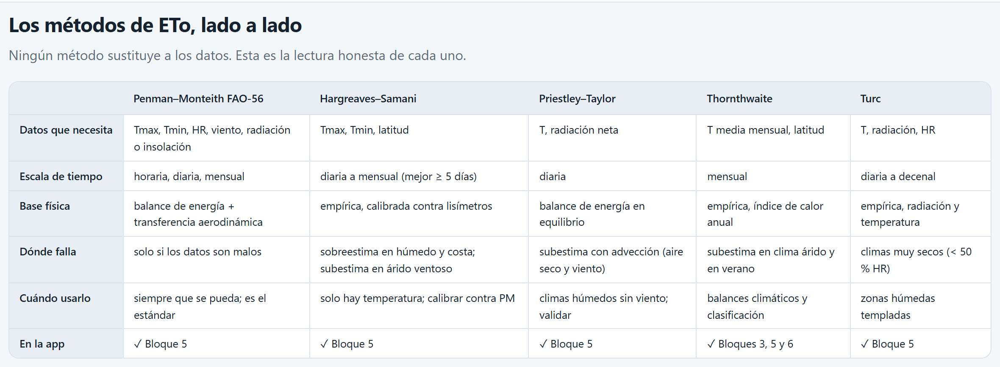
La tabla es la respuesta corta a la pregunta más frecuente del Bloque 5. Penman–Monteith necesita temperatura, humedad, viento y radiación o insolación, vale a escala horaria, diaria y mensual y solo falla si los datos son malos: es el estándar y se usa siempre que se pueda. Hargreaves–Samani pide solo temperatura y latitud, es empírico y calibrado contra lisímetros, sobreestima en sitios húmedos y costeros y subestima en los áridos con viento: se usa cuando solo hay temperatura, calibrándolo contra Penman–Monteith. Priestley–Taylor ignora el viento y la humedad y sirve en climas húmedos sin advección; Thornthwaite es mensual y de la temperatura media, útil para el balance climático del Bloque 3; Turc vale de la escala diaria a la decenal.
Ocho lecturas plegables, de tres o cuatro párrafos cada una, con una figura propia. Son la base conceptual de los capítulos que siguen; cada capítulo repite lo indispensable, pero quien lea las ocho de corrido tendrá el mapa completo.
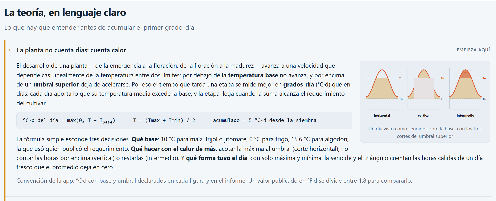
| Lectura | De qué trata | Bloque |
|---|---|---|
| La planta no cuenta días: cuenta calor | El desarrollo avanza casi linealmente con la temperatura entre una base y un óptimo; las tres decisiones que esconde la fórmula simple (la base, el umbral y la forma del día) | 4 |
| ETo: la demanda de la atmósfera, y por qué Penman–Monteith | Evaporar un milímetro cuesta 2.45 MJ/m²; de dónde sale esa energía; qué hacer cuando falta una variable | 5 |
| Del pasto al cultivo: Kc y ETc | El cultivo no es pasto; el Kc en cuatro etapas y su corrección al clima con la ecuación 62 de FAO-56 | 6 |
| El suelo como cubeta: balance hídrico y calendario de riego | Capacidad de campo, punto de marchitez, ADT y AFA; el balance diario del agotamiento; la regla de riego | 6, 7 |
| Fechar la fenología: BBCH, tiempo térmico y calibración | La escala BBCH; las dos partes de un modelo de tiempo térmico; por qué calibrar con fechas propias | 8 |
| El frío que los frutales necesitan | Horas frío, unidades Utah y porciones de frío; la reconstrucción horaria de Linvill cuando solo hay máxima y mínima | 8 |
| Leer un climograma y decidir la ventana de siembra | Las convenciones de Walter–Lieth; cómo se cruzan calor, agua y helada en una sola probabilidad | 3, 9 |
| Qué pregunta responde cada bloque | El resumen de la ruta, bloque por bloque | todos |
Al final de la sección está la guía de interpretación del Bloque 1: las dieciséis fichas de ayuda que reúnen las ideas de todo el programa —grados-día, temperatura base, métodos y cortes, ETo y sus métodos, Kc, ADT y AFA, Ks, agotamiento, lluvia efectiva, frío, fotoperiodo, climograma, aridez, helada y estación de crecimiento— con sus escalas. Las mismas fichas aparecen luego, una a una, junto a cada número de los bloques.
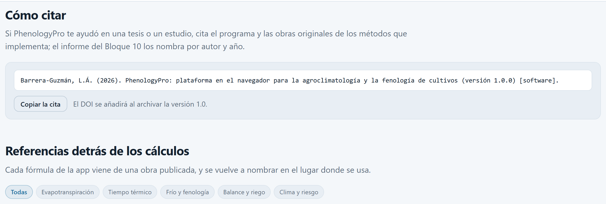
El botón Copiar la lleva al portapapeles. La misma cita cierra el informe del Bloque 10, y el archivo CITATION.cff de la carpeta del programa la trae en el formato que leen los repositorios. El identificador de objeto digital de concepto, 10.5281/zenodo.23004710, resuelve siempre a la versión más reciente archivada en Zenodo.
Las referencias detrás de los cálculos son cuarenta: los documentos de la FAO (24, 25, 33, 46 y 56), los artículos originales de cada método de grados-día y de frío, la monografía BBCH, las fuentes de los índices climáticos y de la clasificación de Köppen–Geiger. El apéndice E de este manual las reproduce completas, por familia; el informe del Bloque 10 cita solo las de los métodos que el estudio usó.
| Si es la primera vez que abres el programa | entonces pasa diez minutos en los dos laboratorios moviendo un control a la vez: la fecha de siembra, la base, el suelo, la ETo. |
| Si no sabes qué método de grados-día usar | entonces lee la primera lectura de teoría y compara en el laboratorio el promedio, el acotado y el seno para tu cultivo; el Bloque 4 lo cuantifica con la serie real. |
| Si tu estación solo tiene temperatura | entonces mira la tabla de los métodos de ETo: Hargreaves calibrado contra Penman–Monteith es el camino, y el Bloque 5 lo hace solo. |
| Si ya tienes la serie | entonces Empezar con mi estación → y sigue el capítulo 2. |
Nada de lo que se haga en el Bloque 1 afecta al estudio: los laboratorios no guardan estado ni entran en el informe.
Todo lo que la app calcula sale de una sola cosa: la serie diaria de una estación. Este bloque la trae —pegada, desde un archivo o de ejemplo—, reconoce qué columna es cada variable, la revisa con reglas físicas, rellena lo que se puede rellenar y dice sin rodeos qué bloques van a funcionar con lo que hay. Al final la guarda como proyecto, para que el estudio se pueda reproducir.
Una estación agroclimática entrega, en el mejor de los casos, una fila por día con la temperatura máxima y mínima, la lluvia y quizá la humedad, el viento, las horas de sol o la radiación. En el peor, entrega solo las temperaturas, con huecos, con algún valor imposible y con un formato de fecha distinto en cada archivo. El Bloque 2 está hecho para el segundo caso y saca provecho del primero.
El bloque se recorre en cinco tarjetas: el sitio, la serie, los papeles de las columnas, el control de calidad y la serie limpia. Solo las dos primeras piden algo; las demás se llenan solas y se leen. Lo que sale de aquí —la serie limpia con sus marcas y el sitio— es lo único que los demás bloques usan: ninguno vuelve a tocar el archivo original.
Grados-día, fenología, heladas, climograma, Hargreaves, Penman–Monteith con estimaciones, balance hídrico, riego y frío invernal funcionan con solo la temperatura máxima y mínima diarias (y la lluvia, para todo lo que tenga que ver con el agua). Humedad, viento y radiación mejoran la ETo y quitan estimaciones del informe, pero no son requisito. No hay que esperar a tener «la serie completa» para empezar.
La primera tarjeta pide lo que la serie no trae: dónde está la estación y en qué clase de clima. De la latitud salen la radiación extraterrestre y la duración del día (FAO-56, ecuaciones 21 y 34); de la altitud, la presión atmosférica y con ella la constante psicrométrica (ecuaciones 7 y 8). Sin esas dos no hay ETo, y por eso son las únicas obligatorias. La longitud solo se cita en el informe.
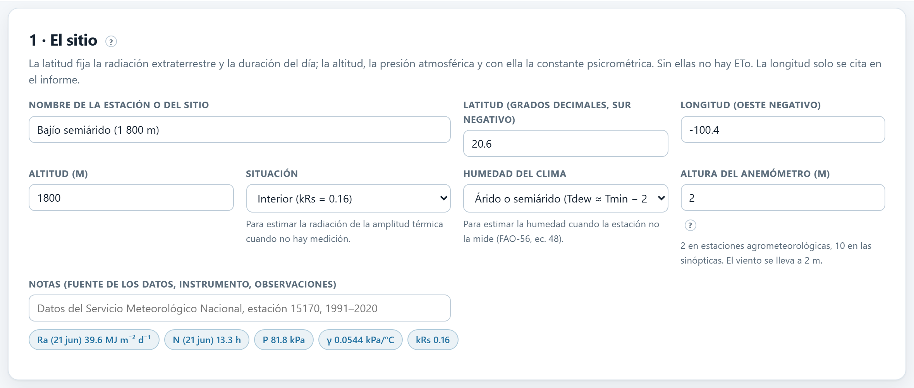
| Campo | Para qué sirve y qué poner |
|---|---|
| Nombre de la estación o del sitio | Encabeza el informe y da nombre a los archivos que la app exporta. |
| Latitud | En grados decimales, negativa al sur del ecuador. Decide la radiación extraterrestre, la duración del día, el fotoperiodo, qué mitad del año es la cálida y en qué mes se parte la temporada de heladas. |
| Longitud | Negativa al oeste. No entra en ningún cálculo; si se escribe positiva con una latitud de México la app lo advierte. |
| Altitud (m) | Presión atmosférica y constante psicrométrica. Un valor muy alto dispara un aviso por si se escribió en pies. |
| Situación | Interior (kRs = 0.16) o Costera, a menos de ~20 km del mar (kRs = 0.19). Es el coeficiente con que FAO-56 estima la radiación a partir de la amplitud térmica cuando la estación no la mide (ecuación 50). |
| Humedad del clima | Húmedo o subhúmedo (Tdew ≈ Tmin) o Árido o semiárido (Tdew ≈ Tmin − 2 °C). Es cómo se estima el punto de rocío, y con él la presión de vapor, cuando no hay humedad medida (ecuación 48 y su nota para climas áridos). |
| Altura del anemómetro (m) | 2 m en las estaciones agrometeorológicas, 10 m en las sinópticas. La app lleva el viento a 2 m con el perfil logarítmico (ecuación 47). |
| Notas | La fuente de los datos, el instrumento, lo que un lector del informe debe saber. Se copian tal cual al informe. |
Al cargar una serie de ejemplo la tarjeta se llena con su latitud, altitud y situación. Con una serie propia hay que escribirlos: la app no los adivina del archivo. Si el estudio se guarda como proyecto, el sitio viaja dentro.
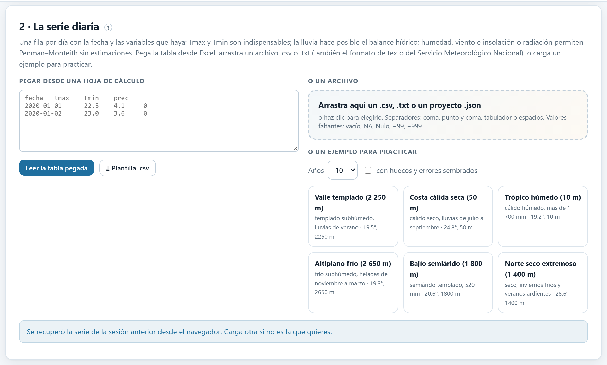
fecha, tmax, tmin, prec, hrmax, hrmin, viento, insolacion) y dos filas de muestra. Se llena en la hoja de cálculo, se guarda como .csv y se abre aquí..csv, .txt y .tsv, y también un proyecto .json guardado antes por la app. Los archivos del Servicio Meteorológico Nacional, con su encabezado de varias líneas y la palabra «Nulo» en los faltantes, se leen tal cual.Si se elige un .xlsx, la app lo dice: «Los libros de Excel no se leen directamente: guarda la hoja como CSV (texto delimitado por comas) o copia las celdas y pégalas en el cuadro de texto». Leer un libro de cálculo exigiría incorporar una biblioteca ajena de cientos de miles de líneas para un problema que se resuelve con copiar y pegar. Se prefirió que la app no cargue una sola línea que no sea propia.
Leída la tabla, la tarjeta 3 muestra las primeras filas con un selector encima de cada columna: el papel que la app le asignó. Lo adivina por el nombre del encabezado (en español o en inglés, con o sin acentos, con las abreviaturas usuales) y, si el nombre no ayuda, por el contenido. Casi siempre acierta; cuando no, se corrige en el selector.
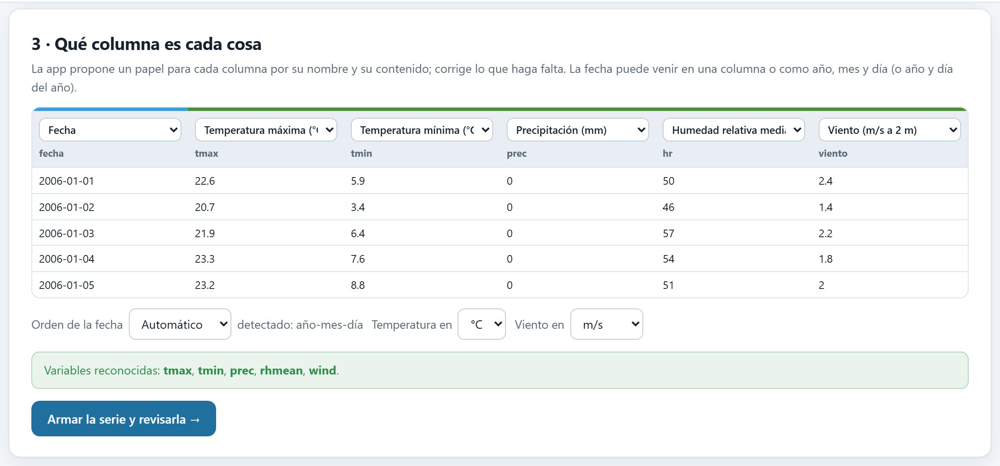
| Papel | Qué acepta |
|---|---|
| Fecha, o Año + Mes + Día, o Año + Día del año | Una columna de fecha completa en cualquier orden (año-mes-día, día/mes/año o mes/día/año, detectado o elegido a mano), o la fecha repartida en columnas. Sin fecha no hay serie. |
| Temperatura máxima, mínima, media | En °C o °F (se elige). La media se deriva de las extremas cuando no viene, y queda marcada como derivada. |
| Precipitación | En mm. Nunca se interpola. |
| Humedad relativa máxima, mínima o media, punto de rocío | Cualquiera de ellas sirve para la presión de vapor; FAO-56 prefiere, en ese orden, el rocío, las dos extremas, la máxima sola y la media. |
| Viento | En m/s, km/h, km/día o nudos, a la altura escrita en el sitio. |
| Insolación (horas de sol) o radiación solar | La radiación en MJ m⁻² d⁻¹, W m⁻² (media diaria), cal cm⁻² d⁻¹ o kJ m⁻² d⁻¹; se convierte al abrir. |
| Evaporación de tanque | Se guarda y se exporta, pero no entra en la ETo de FAO-56. |
| Ignorar | Cualquier columna que no interese. |
El botón Armar la serie y revisarla → construye la serie continua: si el archivo saltó fechas, los días que faltan aparecen como huecos; si repitió alguna, la segunda se descarta y se cuenta. La banda de abajo lo resume: «Serie de 1 de enero de 2006 a 31 de diciembre de 2025: 7,305 días de calendario, 7,305 con registro. Fechas leídas como año-mes-día».
Una serie de estación siempre tiene algo: un 99.9 tecleado, una máxima menor que la mínima, un sensor que se quedó pegado en el mismo valor una semana, un hueco de doce días. El control de calidad aplica cinco reglas, en este orden, y deja cada cambio marcado en la fila para que nada se pierda sin rastro.
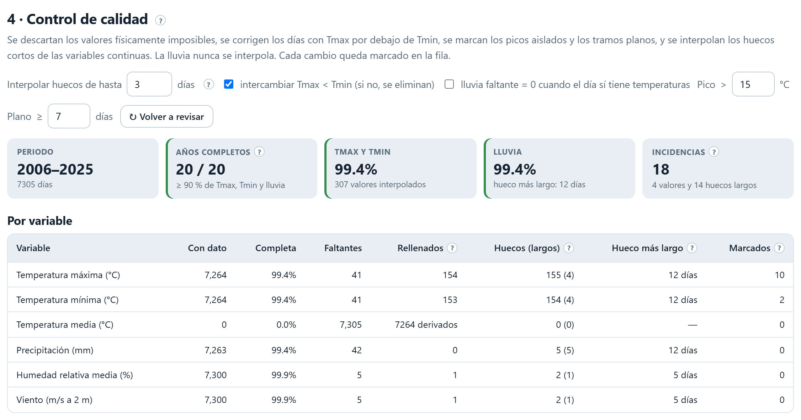
| Regla | Qué hace | Opción |
|---|---|---|
| Rango físico | Un valor imposible para la variable (una temperatura de 99.9, una humedad de 130 %) se elimina y queda como faltante. | siempre |
| Tmax < Tmin | Se intercambian, que es el error de captura más común, o se eliminan las dos si se prefiere. | intercambiar Tmax < Tmin |
| Pico aislado | Un día que se aparta más de N grados de sus dos vecinos se marca, pero se conserva: puede ser un frente real. | Pico > 15 °C |
| Tramo plano | N días o más con exactamente el mismo valor —un sensor pegado— se marcan y se conservan. | Plano ≥ 7 días |
| Huecos cortos | En las variables continuas (temperatura, humedad, viento, radiación) los huecos de hasta N días se rellenan por interpolación lineal y quedan marcados como interpolados; los más largos se dejan vacíos. La lluvia nunca se interpola. | Interpolar huecos de hasta 3 días |
| Lluvia faltante = 0 | Solo si se pide: en muchos registros el observador deja en blanco los días sin lluvia. Se aplica únicamente a días que sí tienen temperaturas. | lluvia faltante = 0… |
La serie limpia tenía 100 % de cobertura y 0 incidencias. La versión con errores queda en 99.4 % de Tmax y Tmin con 307 valores interpolados, un hueco más largo de 12 días y 18 incidencias: 4 valores y 14 huecos largos, además de 303 huecos cortos interpolados. La tabla de incidencias las enumera con fecha: un 99.9 en la máxima del 1 de enero de 2014, fuera de rango físico, eliminado; un 7 de agosto de 2012 con 11.6 < 28.6, intercambiados; un −13.2 en la mínima del 1 de enero de 2015, pico aislado, conservado y marcado; un 24 repetido desde el 1 de enero de 2020, sensor pegado, marcado; y huecos de 12 días en enero de 2010, 2016 y 2022, sin rellenar. Los 20 años siguen siendo útiles para las normales: cada uno conserva más del 90 % de sus días.
Periodo y días; años completos, los que tienen al menos 90 % de Tmax, Tmin y lluvia; la cobertura de Tmax y Tmin con los valores interpolados; la de la lluvia con su hueco más largo; y las incidencias. La tabla dice, para cada variable, cuántos días tienen dato, qué porcentaje es, cuántos faltan, cuántos se rellenaron, cuántos huecos hay y cuántos son largos, el hueco más largo y cuántos valores quedaron marcados.
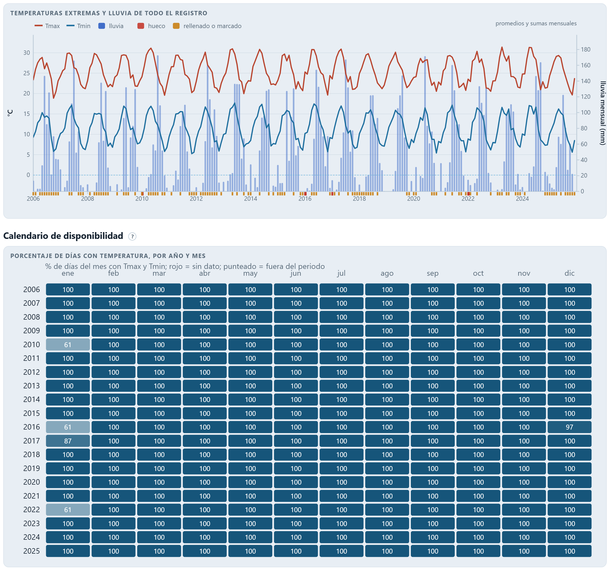
| Si hay menos de 3 años completos | entonces es una anécdota: sirve para practicar, no para normales ni probabilidades de helada. |
| Si hay de 3 a 10 | entonces es una estimación; la app lo advierte y conviene decirlo en el informe. |
| Si hay de 10 a 30 | entonces es lo usual en estaciones agrícolas y suficiente para decidir. |
| Si hay 30 o más | entonces es una normal climática en el sentido de la OMM. |
| Si un hueco pasa de 6 días | entonces no lo interpoles: se pierden los frentes; mejor una estación vecina o dejarlo vacío. |
Las fichas ? de Años completos y Rellenados traen estas escalas. Con 5 años, las probabilidades solo pueden valer 0, 20, 40, 60, 80 o 100 %.
Al final de la tarjeta 4, seis sellos dicen qué análisis van a funcionar con las variables que la serie trae, y cómo. Es la respuesta a «¿sirven mis datos?» antes de entrar a cualquier bloque.
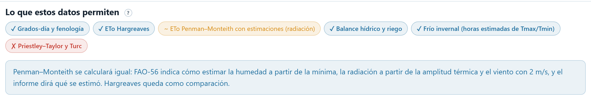
| Sello | Qué necesita |
|---|---|
| Grados-día y fenología | Tmax y Tmin. |
| ETo Hargreaves | Tmax y Tmin, y la latitud del sitio. |
| ETo Penman–Monteith | Completa con humedad, viento y radiación o insolación; con estimaciones cuando falta alguna. El sello dice cuál falta. |
| Balance hídrico y riego | Lluvia y alguna ETo. |
| Frío invernal | Tmax y Tmin; las horas se reconstruyen con el método de Linvill. |
| Priestley–Taylor y Turc | Radiación medida o insolación; sin ellas se calculan igual con la radiación estimada, pero se marcan como comparación. |
El mensaje azul lo dice con todas sus letras: «Penman–Monteith se calculará igual: FAO-56 indica cómo estimar la humedad a partir de la mínima, la radiación a partir de la amplitud térmica y el viento con 2 m/s, y el informe dirá qué se estimó. Hargreaves queda como comparación». El Bloque 5 cuenta los días en que se estimó cada variable y redacta la frase que va al informe.
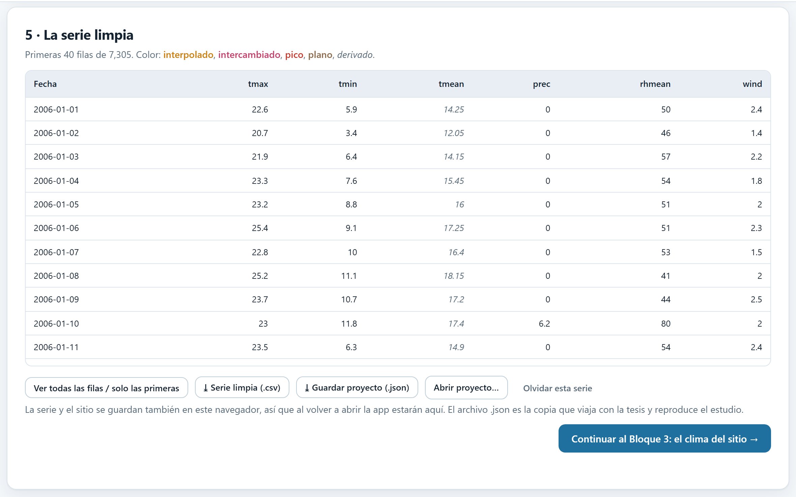
| Botón | Qué hace |
|---|---|
| Ver todas las filas / solo las primeras | Alterna entre la vista previa de 40 filas y la serie entera. |
| ⤓ Serie limpia (.csv) | Descarga la serie tal como la usarán los bloques, con una columna flags que dice qué se hizo en cada fila. Es lo que se entrega como anexo de datos. |
| ⤓ Guardar proyecto (.json) | El sitio y la serie limpia en un archivo compacto que la app vuelve a abrir en esta o en cualquier otra computadora. Las marcas del control de calidad viajan dentro: un valor interpolado hoy sigue siendo un valor interpolado mañana. |
| Cargar proyecto | Abre ese archivo (también se puede soltar en la zona de archivos de la tarjeta 2). |
| Olvidar esta serie | Borra la serie del navegador. No toca ningún archivo. |
| Continuar al Bloque 3 → | Lleva al clima del sitio. |
Al armar la serie, la app la guarda también en el almacenamiento local del navegador. Al volver a abrir index.html aparece el aviso «Se recuperó la serie de la sesión anterior desde el navegador. Carga otra si no es la que quieres». Si la serie es muy larga para caber ahí, el proyecto .json es el único respaldo.
| Mensaje | Qué significa y qué hacer |
|---|---|
| La latitud y la altitud son obligatorias… | Sin ellas no se puede armar la serie. Escríbelas en la tarjeta 1. |
| Latitud polar… / Altitud muy alta… | Revisa el signo y las unidades; los métodos de radiación de FAO-56 valen para latitudes menores y la altitud va en metros. |
| Una longitud positiva entre 86 y 118 con esa latitud parece México escrito sin el signo negativo | No afecta los cálculos, pero el informe la citará así: corrígela. |
| No se encontraron filas con números | La tabla pegada o el archivo no tienen una fila de encabezados seguida de filas numéricas; revisa el separador y que la fecha esté en una columna. |
| Falta la fecha: marca una columna como Fecha, o Año + Mes + Día, o Año + Día del año | La app no encontró la fecha por el nombre; elígela en el selector de la columna. |
| Sin Tmax y Tmin casi nada se puede calcular | Asigna los papeles de las temperaturas; sin ellas la serie no sirve para grados-día, ETo ni balance. |
| Con N años completos las normales y las probabilidades de helada serán una estimación gruesa | Aparece con menos de 10 años completos. La OMM pide 30 y en la práctica se aceptan 10; dilo en el informe. |
| Los libros de Excel no se leen directamente | Guarda como .csv o copia y pega las celdas. |
| El archivo no es un proyecto de PhenologyPro | Se intentó cargar un .json que no escribió la app. |
| Los datos del ejemplo son sintéticos y ficticios | Recordatorio al cargar un ejemplo: sirve para practicar, no para citarse. |
Antes de sembrar nada hay que saber dónde se está. Este bloque convierte los años de la serie en la descripción climática del sitio: las normales mensuales, el climograma de Walter–Lieth, cuándo empiezan y terminan las lluvias, cuándo hiela y con qué probabilidad, los índices de aridez y de humedad, el balance climático de Thornthwaite–Mather y la clasificación de Köppen–Geiger. Todo se calcula con los criterios que elijas y se escribe en un párrafo que va tal cual al informe.
Una normal climática es el promedio de una variable, mes por mes, sobre un periodo largo: la temperatura media de julio, la lluvia de septiembre. La Organización Meteorológica Mundial pide treinta años; en la práctica agrícola se aceptan diez, y con menos se trabaja sabiendo que es una estimación. Todo lo que este bloque calcula —el climograma, los índices, la clasificación— sale de esas doce parejas de temperatura y lluvia, y por eso la primera decisión es de qué años se sacan.
La app aplica una regla por mes: un mes de un año entra en la normal solo si tiene al menos el 80 % de sus días con dato. Así, un año con un hueco de tres semanas en marzo aporta once meses y no contamina el duodécimo. Las heladas y la temporada de lluvias, que son cuentas por año y no por mes, usan cada temporada completa del registro.
| Control | Opciones y para qué |
|---|---|
| Años | Solo los años completos (≥ 90 %), el valor por omisión; Los últimos 30 años completos, para acercarse a la normal de la OMM cuando la serie es larga; o Todos, mes por mes, que aprovecha cada mes con 80 % de días aunque el año esté incompleto. |
| Umbral de helada | 0 °C (meteorológica); 2 °C para el daño en superficie en cultivos sensibles (las hojas se enfrían por debajo del aire en noche despejada); −2 °C para cultivos tolerantes; −4 °C para helada severa. Los Bloques 4 y 9 heredan este umbral. |
| Inicio de la temporada | Los milímetros (20 por omisión) que deben caer en tres días para declarar el inicio de las lluvias, y la racha seca (10 días) que, si aparece en el mes siguiente, desmiente ese inicio. Es la definición agronómica de Stern, Dennett y Garbutt (1981). |
| Almacenamiento | La capacidad de la cubeta del balance climático de Thornthwaite–Mather, en mm (100 por omisión; 150 en suelos profundos, 50 en delgados). |
| ↻ Recalcular | Rehace el bloque con los criterios escritos. |
La tarjeta 2 empieza con un párrafo que la app redacta con los resultados. Es el mismo que abre la sección de clima del informe, y conviene leerlo antes que nada porque resume el bloque:
«Bajío semiárido (1 800 m), a 1800 m de altitud, tiene un clima BSh (estepario cálido, semiárido) según Köppen–Geiger: temperatura media anual de 18.5 °C con oscilación de 9.0 °C entre el mes más frío (noviembre) y el más cálido (mayo), y 546 mm de lluvia anual concentrada en julio. Según el índice de aridez del PNUMA (0.64) es un clima subhúmedo seco; el índice de humedad de Thornthwaite (−36) lo clasifica como semiárido. Las lluvias empiezan en la mediana el 6 jun (entre el 16 may y el 26 jun en el 60 % central de los años) y terminan hacia el 19 oct; el 84 % del año cae en el semestre cálido. Hiela en 2 de 20 temporadas, con 0.1 días de helada al año en promedio y una mínima absoluta de −1.6 °C.»
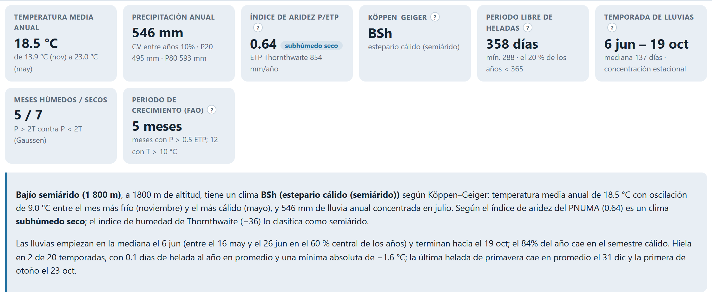
| Recuadro | Qué dice | En el Bajío |
|---|---|---|
| Temperatura media anual | La media de las doce medias mensuales, con el mes más frío y el más cálido. | 18.5 °C, de 13.9 (nov) a 23.0 (may) |
| Precipitación anual | La suma de las normales mensuales, con el coeficiente de variación entre años y los percentiles 20 y 80 del total anual. | 546 mm · CV 10 % · P20 495 · P80 593 |
| Índice de aridez P/ETP | Lluvia entre evapotranspiración potencial de Thornthwaite, con la clase del PNUMA. | 0.64, subhúmedo seco · ETP 854 mm |
| Köppen–Geiger | La clase y su nombre. | BSh, estepario cálido |
| Periodo libre de heladas | Días entre la última helada de primavera y la primera de otoño, en promedio, con el mínimo y el P20. | 358 días · mín. 288 |
| Temporada de lluvias | Inicio y fin medianos y duración. | 6 jun – 19 oct · 137 días |
| Meses húmedos / secos | Los meses con P > 2T contra los de P < 2T, el criterio de Gaussen que dibuja el climograma. | 5 / 7 |
| Periodo de crecimiento (FAO) | Meses con P > 0.5 ETP, el criterio de las zonas agroecológicas, y cuántos tienen T > 10 °C. | 5 meses; 12 con T > 10 °C |
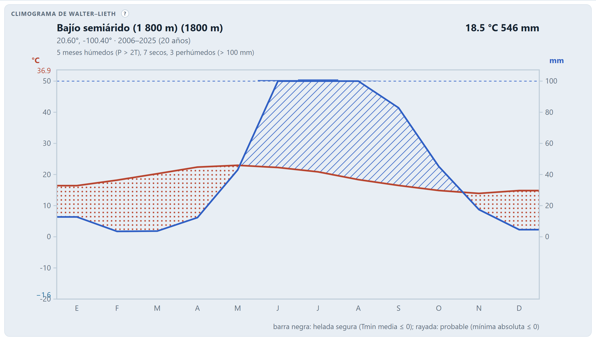
El climograma pone la temperatura media mensual y la lluvia mensual en el mismo eje con la relación 10 °C = 20 mm. Esa relación no es arbitraria: con ella, el mes en que la lluvia queda por debajo de la temperatura es un mes en que la evaporación potencial supera a la lluvia (P < 2T), es decir, un mes seco; el contrario es húmedo. Por encima de 100 mm la escala se comprime a 1:10 y el área se pinta de azul sólido: es el periodo perhúmedo. Debajo del eje se marcan los meses con mínima absoluta bajo cero. Con un vistazo se ve la duración de la temporada de lluvias, la sequía intraestival si la hay y los meses de riesgo de helada. La app lo dibuja con las normales calculadas y lo exporta como cualquier figura.
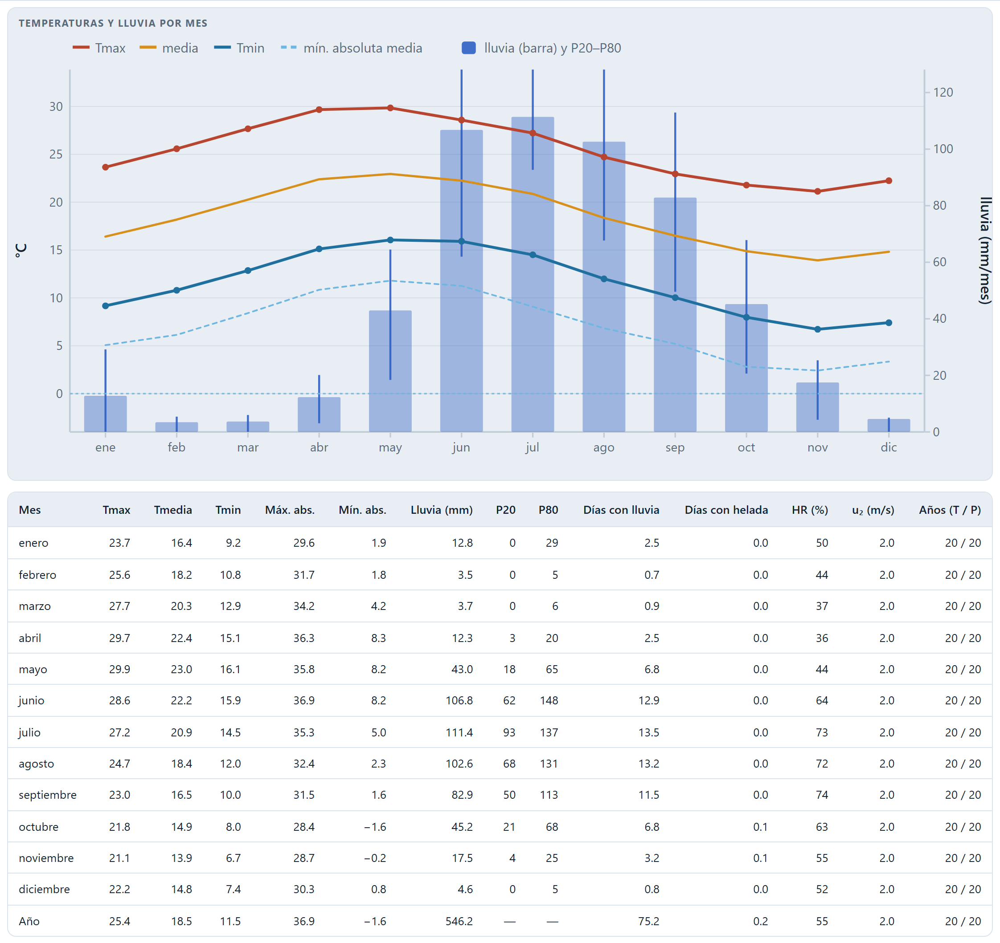
La tabla trae, para cada mes, la Tmax, la Tmedia y la Tmin promedio, la máxima y la mínima absolutas del registro, la lluvia media con sus P20 y P80 entre años, los días con lluvia (≥ 1 mm), los días con helada, la humedad relativa y el viento a 2 m cuando la serie los trae, y cuántos años aportaron a la temperatura y a la lluvia. La última fila es el año: medias para las temperaturas, sumas para la lluvia y los días.
Mayo es el mes más cálido (23.0 °C de media, 29.9 de máxima) y también el más seco antes de las lluvias: 43 mm, pero con un P20 de 18 y un P80 de 65, la mayor incertidumbre relativa del año. Julio es el más lluvioso (111 mm, entre 93 y 137 en el 60 % central de los años). De noviembre a marzo llueve menos de 20 mm al mes y la humedad relativa baja a 37 % en marzo: es el invierno seco del clima BS. La mínima absoluta del registro, −1.6 °C, cayó en octubre.
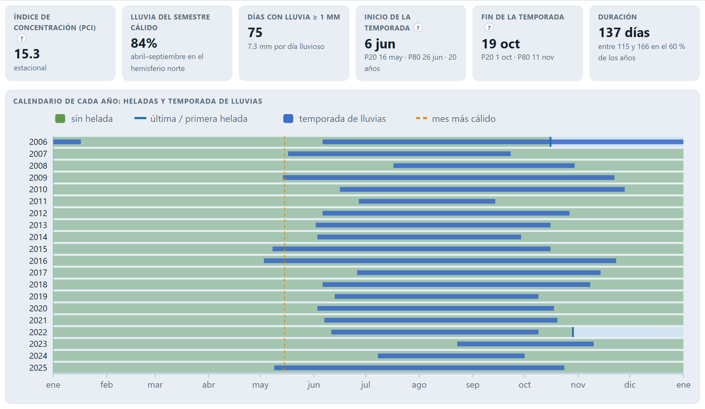
| Recuadro | Qué dice | En el Bajío |
|---|---|---|
| Índice de concentración (PCI) | El índice de Oliver (1980): 100 Σp²/(Σp)². Menos de 10 es uniforme; de 10 a 15, moderadamente estacional; de 15 a 20, estacional; más de 20, fuertemente estacional. | 15.3, estacional |
| Lluvia del semestre cálido | La fracción de la lluvia anual que cae de abril a septiembre en el hemisferio norte (de octubre a marzo en el sur). | 84 % |
| Días con lluvia ≥ 1 mm | Al año, y la lámina media de cada día lluvioso. | 75 · 7.3 mm |
| Inicio de la temporada | La mediana entre años del primer día, contado desde el mes más seco, en que caen 20 mm en tres días sin que le siga una racha seca de 10 días en el mes siguiente; con su P20 y su P80. | 6 jun (16 may – 26 jun) |
| Fin de la temporada | El primer día, al menos 60 días después del inicio, a partir del cual caen menos de 10 mm en 30 días. | 19 oct (1 oct – 11 nov) |
| Duración | Días entre inicio y fin, mediana y 60 % central. | 137 días (115–166) |
En el Bajío la temporada empieza el 6 de junio en la mediana, pero el 20 % de los años empieza antes del 16 de mayo y otro 20 % después del 26 de junio: cuarenta días de diferencia entre un año temprano y uno tardío. Quien siembra en seco esperando la lluvia del 6 de junio se equivoca uno de cada cinco años por más de tres semanas. El calendario de la figura 3.5 muestra esa dispersión año por año, y el Bloque 9 la convierte en la probabilidad de que el agua alcance para cada fecha de siembra.
En el Bajío casi no hiela: 2 de 20 temporadas, 0.1 días al año, −1.6 °C de mínima absoluta. Para enseñar la tarjeta de heladas conviene otro sitio de práctica, el Valle templado (2 250 m), donde hiela en 16 de 20 inviernos. Las cifras de esta sección son de ese ejemplo.
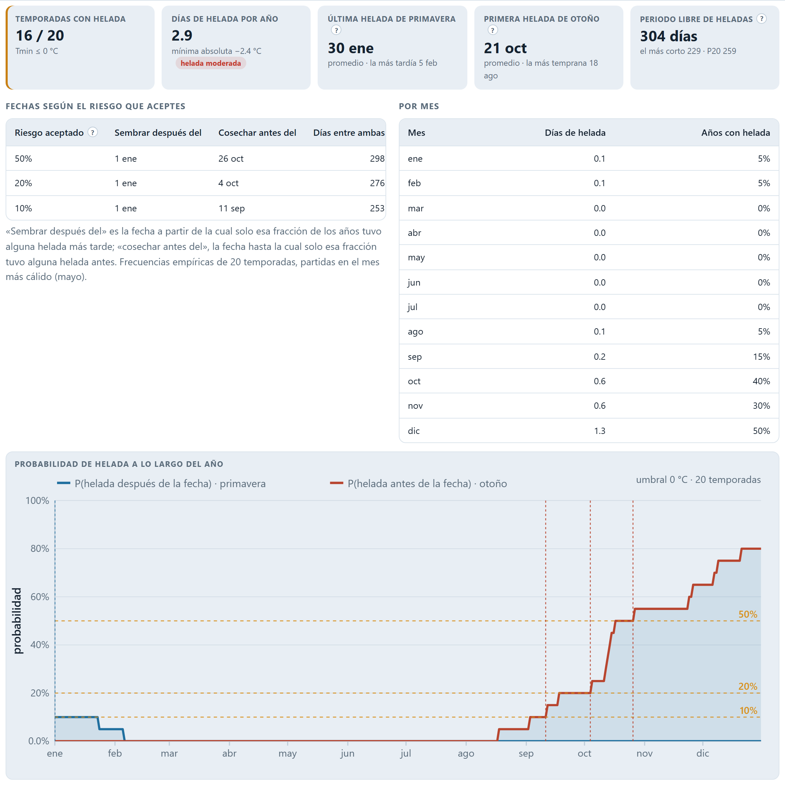
| Recuadro | Qué dice | En el Valle templado |
|---|---|---|
| Temporadas con helada | Cuántas de las temporadas del registro tuvieron al menos un día con Tmin ≤ umbral. | 16 / 20 |
| Días de helada por año | El promedio, con la mínima absoluta del registro y su clase. | 2.9 · −2.4 °C, helada moderada |
| Última helada de primavera | La fecha promedio de la última helada antes del mes más cálido, y la más tardía del registro. | 30 ene · la más tardía 5 feb |
| Primera helada de otoño | La fecha promedio de la primera helada después del mes más cálido, y la más temprana. | 21 oct · la más temprana 18 ago |
| Periodo libre de heladas | Los días entre ambas, en promedio, con el más corto y el P20. | 304 días · el más corto 229 · P20 259 |
Cada temporada se parte en el mes más cálido: lo que hiela antes es helada de primavera, lo que hiela después es de otoño. Con las últimas heladas de primavera de cada año se construye la curva de la probabilidad de que todavía hiele después de una fecha; con las primeras de otoño, la de que ya haya helado antes de una fecha. La tabla lee esas curvas al 50, 20 y 10 % de riesgo:
| Riesgo aceptado | Sembrar después del | Cosechar antes del | Días entre ambas |
|---|---|---|---|
| 50 % | 1 ene | 26 oct | 298 |
| 20 % | 1 ene | 4 oct | 276 |
| 10 % | 1 ene | 11 sep | 253 |
En el Valle templado las heladas son de invierno —diciembre concentra 1.3 días y el 50 % de los años, octubre y noviembre 0.6 días—, así que la primavera queda libre desde enero y lo que manda es el otoño: quien acepte fallar uno de cada cinco años cosecha antes del 4 de octubre; quien solo acepte uno de cada diez, antes del 11 de septiembre. Esas fechas son frecuencias empíricas: con 20 años, el 10 % es dos años, y la app lo recuerda en la ficha de ayuda.
| Si hiela en menos de una de cada cinco temporadas | entonces las fechas al 20 y 10 % coinciden con los extremos del año y no dicen nada: el informe omite la tabla y habla de heladas ocasionales. |
| Si el cultivo es sensible (hortalizas, frijol, maíz en floración) | entonces usa el umbral de 2 °C y el riesgo del 10 %. |
| Si el cultivo tolera (trigo, cebada, avena en macollo) | entonces el umbral de −2 °C y el 20 % bastan. |
| Si la serie tiene menos de 10 temporadas | entonces los porcentajes son gruesos; reporta el periodo libre más corto del registro en lugar del P20. |
El Bloque 9 lleva estas curvas a cada etapa del cultivo: no importa que hiele, importa que hiele en la floración.
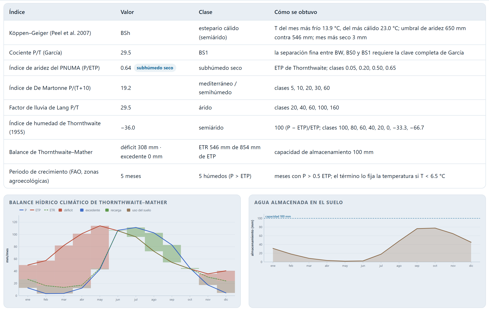
| Índice | Cómo se obtiene | En el Bajío |
|---|---|---|
| Köppen–Geiger (Peel et al. 2007) | Con las normales de temperatura y lluvia y el hemisferio: el umbral de aridez de los climas B sale de la temperatura media y de en qué mitad del año llueve; los grupos A, C y D, de la temperatura del mes más frío; la letra de la lluvia, del mes más seco. | BSh: umbral de aridez 650 mm contra 546 mm; mes más seco 3 mm |
| Cociente P/T (García) | Lluvia anual entre temperatura media anual. En los grupos A y C da el subtipo de humedad (w0, w1, w2); en los B separa BS0, BS1 y BW. | 29.5 → BS1 |
| Índice de aridez del PNUMA | P/ETP con la ETP de Thornthwaite. Clases en 0.05, 0.20, 0.50 y 0.65. | 0.64, subhúmedo seco |
| De Martonne | P/(T + 10). Clases en 5, 10, 20, 30 y 60. | 19.2, mediterráneo / semihúmedo |
| Factor de lluvia de Lang | P/T. Clases en 20, 40, 60, 100 y 160. | 29.5, árido |
| Índice de humedad de Thornthwaite (1955) | 100 (P − ETP)/ETP. Clases en 100, 80, 60, 40, 20, 0, −33.3 y −66.7. | −36.0, semiárido |
| Balance de Thornthwaite–Mather | Mes a mes, la lluvia llena una cubeta de la capacidad elegida y la ETP la vacía; lo que la ETP no consigue es déficit y lo que rebosa es excedente. | déficit 308 mm, excedente 0; ETR 546 de 854 mm de ETP |
| Periodo de crecimiento (FAO) | Meses con P > 0.5 ETP; de ellos, los húmedos tienen P > ETP; la temperatura lo corta si baja de 6.5 °C. | 5 meses, 5 húmedos |
El mismo sitio es subhúmedo seco para el PNUMA, semihúmedo para De Martonne, árido para Lang y semiárido para Thornthwaite. No es una contradicción: cada índice divide el continuo en clases distintas y con umbrales pensados para regiones distintas. El que se cita en la literatura agroclimática actual es el del PNUMA, porque compara la lluvia con una demanda de evaporación y no solo con la temperatura; los otros se dan para que el estudio se pueda comparar con trabajos antiguos.
Las dos últimas figuras del bloque son el balance hídrico climático —ETP, lluvia, evapotranspiración real, déficit y excedente por mes— y el agua almacenada en el suelo a lo largo del año según ese balance. Son el antecedente mensual del balance diario del Bloque 6: dicen, a grandes rasgos, en qué meses el clima deja agua en el suelo y en cuáles la agota.
| Mensaje | Qué significa y qué hacer |
|---|---|
| No hay suficientes meses completos para las normales: cada mes necesita al menos un año con 80 % de sus días | Error: con los años elegidos algún mes se quedó sin dato. Revisa el calendario de disponibilidad del Bloque 2 o cambia a Todos, mes por mes. |
| Normales calculadas con N años: una estimación, no una normal climática | Aviso con menos de 10 años. Se puede seguir, diciéndolo en el informe. |
| Primero hace falta una serie | El bloque no tiene qué calcular: vuelve al Bloque 2. |
El reloj del cultivo no marca días sino calor. Este bloque acumula los grados-día desde la fecha de siembra que elijas, en cada uno de los años del registro, con el método y los umbrales con que se publicó el requerimiento del cultivo; dice cuántos días tarda la meta y en qué fracción de los años se alcanza; dibuja el calendario térmico del sitio; prueba todas las fechas de siembra del año; y mide cuánto cambia el resultado de un método a otro, para que nunca se mezclen.
Entre una temperatura base por debajo de la cual no crece y un umbral superior por encima del cual deja de acelerar, el desarrollo de una planta avanza casi en proporción a la temperatura. Sumar, día tras día, lo que la temperatura excede de la base da los grados-día (°C·d): una moneda con la que cada etapa tiene un precio fijo —tantos °C·d para emerger, tantos para florecer— que el sitio paga más rápido en mayo que en noviembre.
La fórmula simple esconde tres decisiones, y las tres cambian el número: qué base (10 °C para el maíz, 0 o 4.5 para el trigo, 12–13 para el algodón), qué hacer arriba del umbral (nada, acotar, recortar) y qué forma darle al día (el promedio de los extremos, un triángulo, una senoide). Un requerimiento térmico publicado vale con el método con que se midió. Por eso el catálogo de la app guarda, junto al requerimiento de cada cultivo, el método y los umbrales con que se publicó, y por eso la última tarjeta de este bloque muestra cuánto se separan los métodos entre sí.
Promedio: (Tmax + Tmin)/2 − base, el más usado (McMaster y Wilhelm 1997). Promedio acotado: antes de promediar, Tmax se acota a 30 °C y Tmin a 10 °C; es el método con que se publican los requerimientos del maíz en Estados Unidos. Triángulo simple y seno simple: integran una onda triangular o senoidal entre la mínima y la máxima del día (Lindsey y Newman 1956; Baskerville y Emin 1969; Allen 1976). Triángulo doble y seno doble: la primera mitad del día sube de la mínima a la máxima y la segunda baja hacia la mínima del día siguiente. Los cortes deciden qué pasa con la parte del día por encima del umbral superior: horizontal la cuenta como si estuviera en el umbral; intermedio la descuenta; vertical no cuenta nada de ese tiempo; sin corte la deja pasar. Las unidades calor de Ontario (CHU) son otra escala: día y noche por separado, con una parábola de día, usadas para el maíz en Canadá (Brown 1975).
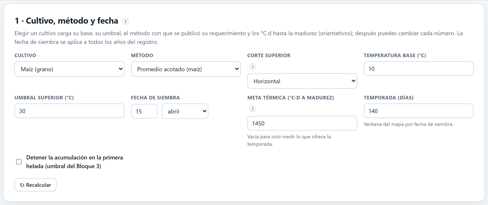
| Control | Qué hace |
|---|---|
| Cultivo | Uno de los 19 del catálogo. Carga la base, el umbral, el método con que se publicó el requerimiento y los °C·d hasta la madurez, que son orientativos y se calibran en el Bloque 8. |
| Método y Corte superior | Los seis métodos y las CHU; los cuatro cortes. Con las CHU no hay base ni corte que elegir. |
| Temperatura base y Umbral superior | En °C. El umbral se puede dejar vacío para no acotar. |
| Fecha de siembra | Día y mes. Se aplica a todos los años del registro. |
| Meta térmica | Los °C·d a madurez que se persiguen; la app cuenta los días hasta alcanzarlos. |
| Temporada (días) | La ventana en la que se suman los °C·d disponibles (140 por omisión para el maíz). Es también el horizonte del mapa de fechas de siembra. |
| Detener la acumulación en la primera helada (umbral del Bloque 3) | Si se marca, la acumulación de cada año se corta al primer día con Tmin bajo el umbral de helada elegido en el Bloque 3; los años cortados no llegan a la meta por frío, no por falta de calor. |
La tarjeta 2 siembra el cultivo el 15 de abril de cada uno de los veinte años, acumula y resume. Los recuadros dan el resultado y el párrafo de abajo lo lee:
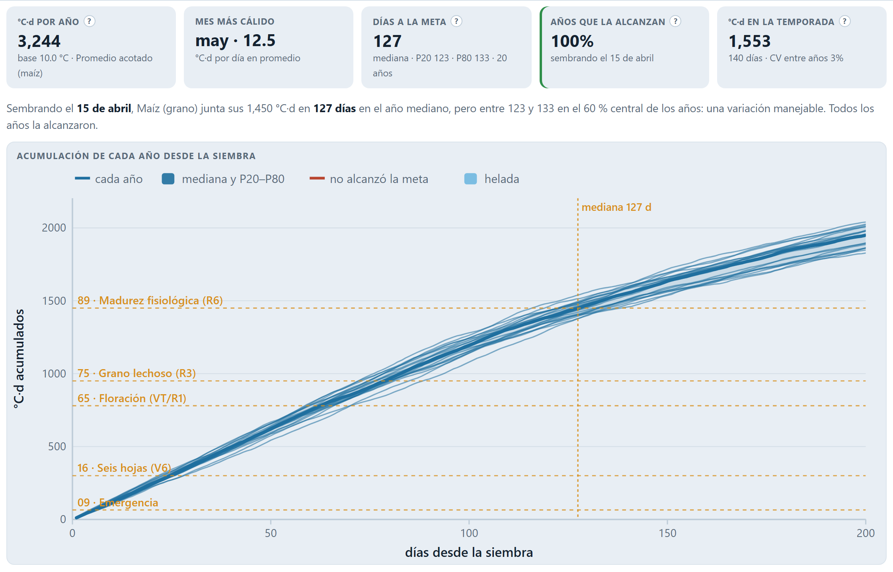
| Recuadro | Qué dice | En el Bajío |
|---|---|---|
| °C·d por año | El total de un año calendario con esa base y ese método: el tamaño del «presupuesto térmico» del sitio. | 3,244 |
| Mes más cálido | El mes que más °C·d aporta por día. | mayo · 12.5 °C·d/día |
| Días a la meta | La mediana entre años, el P20 y el P80, y cuántos años entran en la cuenta. | 127 · P20 123 · P80 133 · 20 años |
| Años que la alcanzan | La fracción de años en que la meta se alcanzó dentro de la ventana revisada (la temporada más sesenta días). | 100 % |
| °C·d en la temporada | Los que se juntan en los días de temporada declarados, con el coeficiente de variación entre años. | 1,553 en 140 días · CV 3 % |
«Sembrando el 15 de abril, Maíz (grano) junta sus 1,450 °C·d en 127 días en el año mediano, pero entre 123 y 133 en el 60 % central de los años: una variación manejable. Todos los años la alcanzaron.»
El cuadro por año, plegado bajo la figura, da el detalle: los °C·d a los 30, 60, 90 y 120 días, el total de la temporada, los días a la meta, la fecha en que se alcanzó y los días sin dato. En 2013, el año más cálido, la meta cayó el 12 de agosto a los 119 días; en 2017, el más fresco, el 31 de agosto a los 138. Diecinueve días de diferencia entre el año más rápido y el más lento: eso es lo que el calendario de siembra debe absorber.
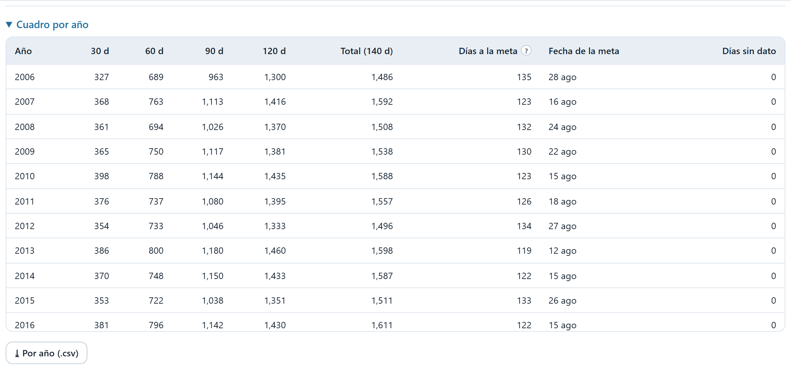
| Si el CV de los °C·d de la temporada es menor de 5 % | entonces el sitio es muy estable (trópico de altura, costa): planea con la mediana. |
| Si está entre 5 y 10 % | entonces es estable; la mediana sirve y el P20 es el margen. |
| Si está entre 10 y 20 % | entonces es variable: planea con el P20, no con la media. |
| Si pasa de 20 % | entonces es muy variable (clima continental o serie corta); revisa la serie antes de decidir. |
La ficha ? de °C·d en la temporada trae esta escala. En el Bajío el CV es de 3 %.
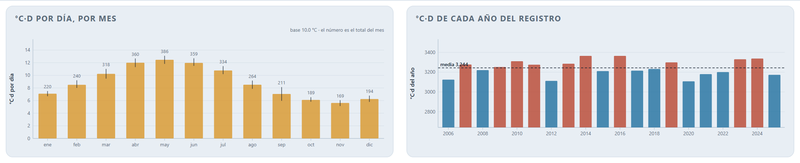
El calendario térmico es la velocidad del reloj del cultivo en cada época del año: en el Bajío, un día de mayo vale 12.5 °C·d y uno de noviembre 5.6, así que la misma etapa tarda más del doble en invierno que en primavera. El cuadro plegado bajo la figura da el valor por día de cada mes con su P20 y P80 y el total del mes: mayo 386, junio 359, abril 360, noviembre 169. La figura de la derecha dice si el registro tiene tendencia o rachas: los años por encima de la media van en un color y los de abajo en otro. Cuando se ve una racha reciente, conviene preguntarse si el clima está cambiando; el Bloque 9 lo prueba con escenarios.
La tarjeta 4 «siembra» el cultivo cada cinco días del año, en todos los años del registro, y responde tres preguntas para cada fecha: cuántos °C·d junta en la temporada, cuántos días tarda en llegar a la meta y en qué fracción de los años lo logra.
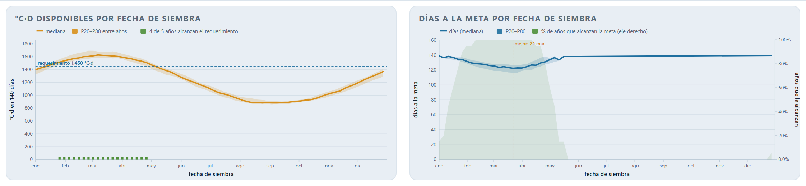
«La fecha que madura más rápido con al menos 80 % de los años alcanzando la meta es el 22 mar (122 días en la mediana, 100 % de los años). El Bloque 9 cruzará este mapa con las heladas y el agua para dar la ventana de siembra completa.»
El cuadro cada diez días lo detalla: sembrando el 1 de enero solo el 15 % de los años junta 1,450 °C·d en la temporada; el 31 de enero, el 95 %; del 10 de febrero al 11 de abril, el 100 %, con la meta entre 122 y 129 días; el 1 de mayo baja al 60 % y desde ahí la temporada de 140 días ya no alcanza. Es la lectura solo térmica: dice que el Bajío puede madurar maíz sembrado en marzo, no que haya agua para hacerlo. Esa es la razón del Bloque 9.
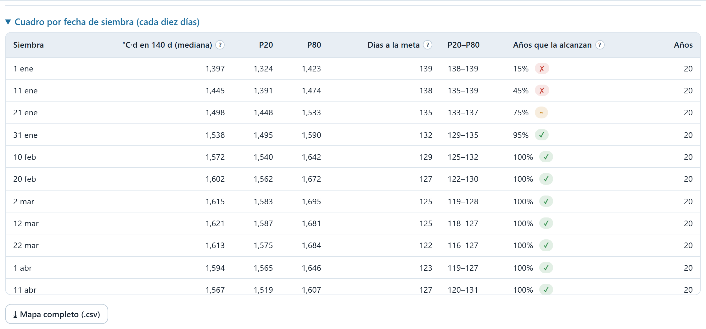
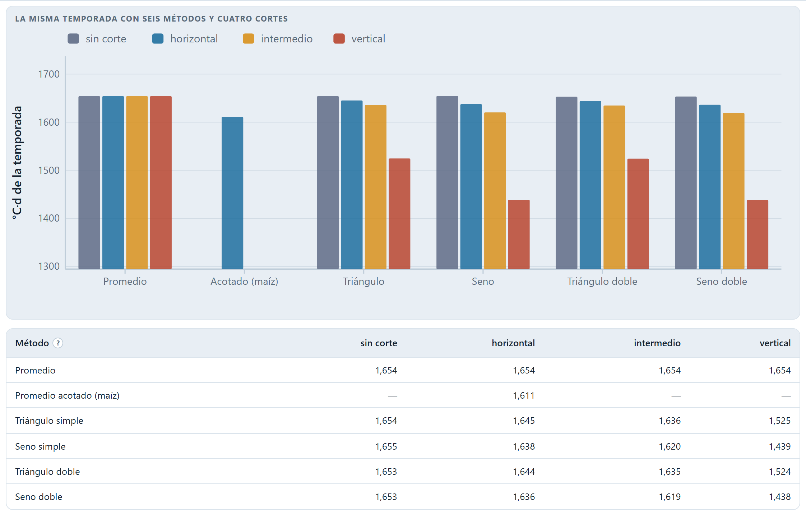
| Método | Sin corte | Horizontal | Intermedio | Vertical |
|---|---|---|---|---|
| Promedio | 1,654 | 1,654 | 1,654 | 1,654 |
| Promedio acotado (maíz) | — | 1,611 | — | — |
| Triángulo simple | 1,654 | 1,645 | 1,636 | 1,525 |
| Seno simple | 1,655 | 1,638 | 1,620 | 1,439 |
| Triángulo doble | 1,653 | 1,644 | 1,635 | 1,524 |
| Seno doble | 1,653 | 1,636 | 1,619 | 1,438 |
La app lo resume: «Entre el método más bajo y el más alto hay 216 °C·d (15 %): esa es la razón de usar siempre el método con que se publicó el requerimiento. Las unidades calor de Ontario de la misma temporada: 3,613 CHU. Tu elección actual da 1,611.» En el Bajío el promedio no siente el corte porque la media diaria casi nunca pasa de 30 °C, pero el seno y el triángulo sí, porque integran las horas de la tarde que sí lo pasan: con corte vertical pierden más de 200 °C·d. Un requerimiento de 1,450 medido con seno y corte vertical no es el mismo número que 1,450 medidos con promedio acotado.
Elige el método por la fuente del requerimiento, no por gusto. Si el número viene de un boletín de Iowa o de Ontario, es promedio acotado o CHU; si viene de un artículo de entomología o de horticultura, casi siempre es seno simple con corte horizontal; si viene de tu propia parcela (Bloque 8), es el que hayas usado para calibrar. La app guarda el método en el registro de cálculo y lo escribe en los métodos del informe.
| Mensaje | Qué significa y qué hacer |
|---|---|
| En N % de los años la meta no se alcanzó en la ventana revisada | La temporada más sesenta días no bastó en esos años. Alarga la temporada, baja la meta con un cultivar precoz o mueve la fecha. |
| Ninguna fecha alcanza la meta en al menos 80 % de los años dentro de la temporada elegida | El mapa no encontró una fecha segura. Alarga la temporada, revisa la meta o considera un cultivar más precoz. |
| Temporada de N días del año A… Entre el método más bajo y el más alto hay X °C·d | No es un aviso sino la lectura de la tarjeta 5: si la diferencia pasa del 10 %, el método con que se publicó el requerimiento importa de verdad. |
| Primero hace falta una serie | Vuelve al Bloque 2. |
Cuánta agua pide la atmósfera del sitio, día por día, medida como la evapotranspiración de un pasto bien regado. Penman–Monteith FAO-56 con lo que la estación mida —estimando lo que falte exactamente como manda FAO-56 y contando los días en que lo hizo—, cuatro métodos simples para comparar, la calibración local de Hargreaves y la decisión de qué ETo alimentará el balance hídrico y el riego.
Evaporar un milímetro de agua sobre un metro cuadrado cuesta 2.45 megajulios. Esa energía la pone el sol, y el aire seco y el viento se la llevan en forma de vapor. La evapotranspiración de referencia (ETo) es cuánta agua perdería por día una superficie de pasto de 12 cm, bien regada, con albedo 0.23 y resistencia de superficie fija, bajo el clima del sitio: no depende del cultivo ni del suelo, solo del clima, y por eso sirve como vara para todos los cultivos.
La ecuación de Penman–Monteith en la forma de FAO-56 (ecuación 6) la calcula sumando dos términos: uno de radiación, que depende de la radiación neta y de la pendiente de la curva de presión de vapor, y uno aerodinámico, que depende del viento y del déficit de presión de vapor. Es el método que la FAO fijó como estándar en 1998 después de comparar todos los demás contra lisímetros, y el que la app usa por omisión.
Hargreaves–Samani (1985): ETo = 0.0023 · Ra · (T + 17.8) · √(Tmax − Tmin); solo temperatura y radiación extraterrestre, que sale de la latitud y la fecha. La amplitud térmica hace de sustituto de la nubosidad y de la humedad. Priestley–Taylor (1972): solo el término de radiación de Penman–Monteith multiplicado por α = 1.26; vale en climas húmedos sin advección. Turc (1961): de la temperatura media y la radiación solar, con corrección por humedad baja. Thornthwaite (1948): mensual, de la temperatura media y la latitud; es la ETP con que se hacen el balance climático y los índices del Bloque 3. Ninguno sustituye a Penman–Monteith cuando se puede calcular; todos sirven para comparar y para el sitio destino que solo tenga temperatura.
Casi ninguna estación agrícola mide radiación; muchas no miden humedad ni viento. FAO-56 no dice «entonces usa otro método»: dice cómo estimar cada variable faltante (capítulo 3, «Missing climatic data») y recomienda seguir con Penman–Monteith. La tarjeta 1 trae los coeficientes de esas estimaciones, precargados con los valores del sitio y de FAO-56.
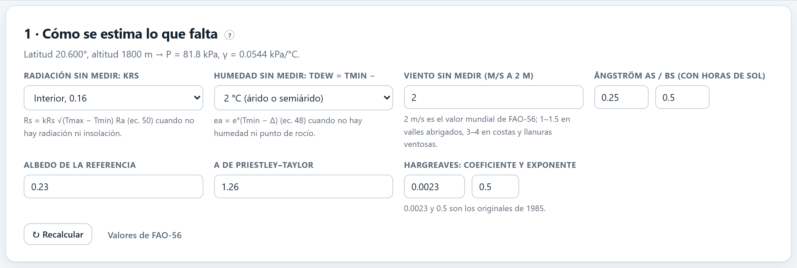
| Control | Qué estima y cómo |
|---|---|
| Radiación sin medir: kRs | Rs = kRs · √(Tmax − Tmin) · Ra (ecuación 50). Interior, 0.16 o Costera, 0.19; viene del sitio del Bloque 2. |
| Humedad sin medir: Tdew = Tmin − | El punto de rocío se toma igual a la mínima (ecuación 48) o, en climas áridos, 2 o 3 °C por debajo, como sugiere la nota de FAO-56. De ahí sale la presión de vapor real ea. |
| Viento sin medir (m/s a 2 m) | El valor que se usa los días sin viento: 2 m/s es la media mundial que propone FAO-56. |
| Ångström as / bs | Cuando la estación da horas de sol y no radiación: Rs = (as + bs · n/N) · Ra (ecuación 35), con 0.25 y 0.50 por omisión. |
| Albedo de la referencia | 0.23 para el pasto de referencia; no conviene tocarlo. |
| α de Priestley–Taylor | 1.26 por omisión; sube en sitios advectivos. |
| Hargreaves: coeficiente y exponente | 0.0023 y 0.5 en la fórmula original; algunos autores los ajustan por región. La calibración de la tarjeta 4 hace ese ajuste con datos. |
Bajo los recuadros de la tarjeta 2 la app escribe, para el estudio del Bajío: «Penman–Monteith se calculó en 7,305 días (0 sin temperatura); la radiación se estimó de la amplitud térmica con kRs = 0.16 en 100 % de los días (ec. 50). El informe repetirá esta frase tal cual.» Cuenta los días en que se estimó cada variable —humedad, radiación, viento— y con qué coeficiente. Es la honestidad mínima de un estudio de ETo: quien lo lea sabe qué se midió y qué se supuso.
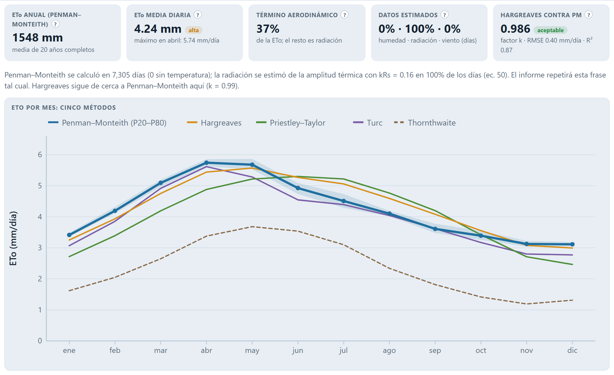
| Recuadro | Qué dice | En el Bajío |
|---|---|---|
| ETo anual (Penman–Monteith) | La media de los totales de los años completos (≥ 90 % de días). | 1548 mm · 20 años |
| ETo media diaria | El promedio de todos los días, con su clase, y el mes de máximo. | 4.24 mm, alta · abril 5.74 |
| Término aerodinámico | La fracción de la ETo que ponen el viento y el aire seco; el resto es radiación. | 37 % |
| Datos estimados | El porcentaje de días en que se estimó la humedad, la radiación y el viento. | 0 % · 100 % · 0 % |
| Hargreaves contra PM | El factor k = PM/HS, el RMSE diario y el R² de la calibración de la tarjeta 4. | 0.986, aceptable · 0.40 mm/día · 0.87 |
| Si la ETo diaria media es menor de 2 mm | entonces es baja: clima fresco o húmedo, invierno. |
| Si está entre 2 y 4 | entonces es moderada: templado, primavera y otoño. |
| Si está entre 4 y 6 | entonces es alta: verano templado, trópico húmedo, el Bajío. |
| Si está entre 6 y 8 | entonces es muy alta: cálido y seco. |
| Si pasa de 8 | entonces es extrema: desierto con viento. |
Los máximos diarios de abril y mayo (7.2 y 7.4 mm) son los que un sistema de riego debe poder reponer; la tabla mensual los trae.
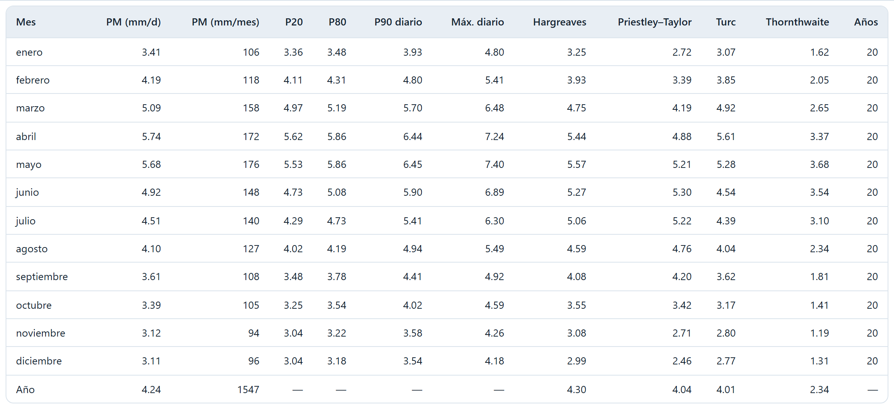
Abril y mayo son los meses de mayor demanda: 5.74 y 5.68 mm/día por Penman–Monteith (172 y 176 mm al mes), con un P90 diario de 6.4 y máximos de 7.2 y 7.4. Hargreaves los sigue de cerca (5.44 y 5.57) pero se pasa en el verano lluvioso: en julio da 5.06 contra 4.51, porque la amplitud térmica no baja tanto como la radiación cuando hay nubes. Priestley–Taylor subestima la primavera seca y ventosa (4.88 en abril) y Thornthwaite, que solo ve la temperatura, se queda en 2.34 mm/día de promedio anual: sirve para el balance climático, no para regar.
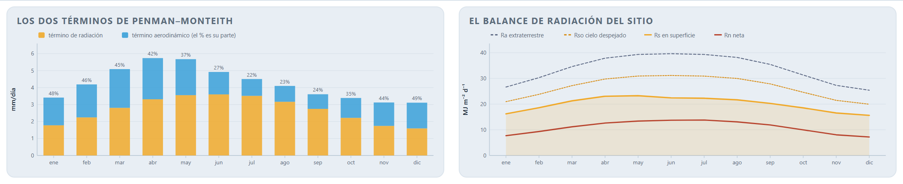
La tarjeta 3 abre la caja negra. Los dos términos dicen si la ETo del sitio la manda el sol o el aire: en el Bajío el 37 % es aerodinámico, un clima equilibrado según la escala de la ficha; en la Costa cálida seca pasa del 45 % (advectivo) y ahí Priestley–Taylor y Turc, que no ven el viento, subestiman. El balance de radiación muestra Ra, Rs, Rso y Rn a lo largo del año: cuando Rs está estimada de la amplitud térmica se ve suavizada respecto a una medida, y ese es el precio de no medir radiación.
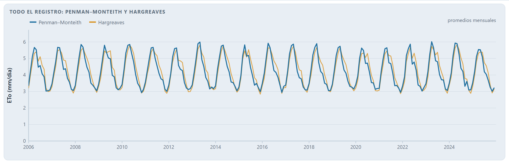
La tarjeta 4 compara, día por día, cada método simple contra Penman–Monteith y ofrece dos correcciones: un factor k = PM/método que corrige el promedio con un solo número, y una regresión ETo(PM) = a + b · ETo(método) que corrige también la pendiente. Para cada una da el RMSE que queda después de aplicarla.
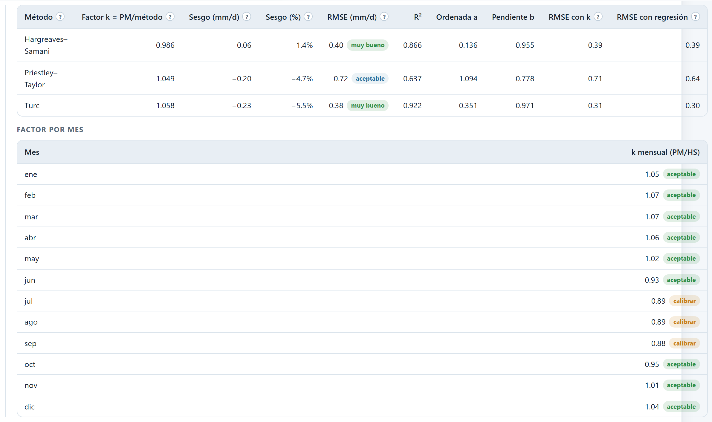
| Método | k | Sesgo | RMSE | R² | a | b | RMSE con k | con regresión |
|---|---|---|---|---|---|---|---|---|
| Hargreaves–Samani | 0.986 | 0.06 (1.4 %) | 0.40 muy bueno | 0.866 | 0.136 | 0.955 | 0.39 | 0.39 |
| Priestley–Taylor | 1.049 | −0.20 (−4.7 %) | 0.72 aceptable | 0.637 | 1.094 | 0.778 | 0.71 | 0.64 |
| Turc | 1.058 | −0.23 (−5.5 %) | 0.38 muy bueno | 0.922 | 0.351 | 0.971 | 0.31 | 0.30 |
El cuadro de k mensual enseña la estacionalidad del sesgo: Hargreaves va por debajo de Penman–Monteith de noviembre a mayo (k de 1.02 a 1.07) y por encima en la temporada de lluvias (0.88 a 0.93 de julio a septiembre, marcados calibrar). Un solo factor anual lo esconde; por eso la app da los doce.
La app lo advierte en ámbar: «Atención: Penman–Monteith lleva variables estimadas (radiación), así que la calibración compara dos estimaciones; vale como orden de magnitud y para ver la estacionalidad del sesgo, no como calibración definitiva.» Cuando la radiación de Penman–Monteith se estimó de la amplitud térmica, las dos ETo comparten el mismo ingrediente, y el acuerdo es en parte circular. La calibración real exige una estación con radiación y humedad medidas; con ella, la misma tarjeta dice «esta calibración es la real del sitio».
| Si el RMSE diario es menor de 0.5 mm/día | entonces es muy bueno: sirve día a día. |
| Si está entre 0.5 y 1.0 | entonces es aceptable: útil a escala semanal. |
| Si está entre 1.0 y 1.5 | entonces es pobre: solo para totales mensuales. |
| Si pasa de 1.5 | entonces es malo: no lo uses sin corregir. |
| Si el factor k se aparta más de 10 % de 1 | entonces calibra; si más de 20 %, no uses el método sin corregir. |
Las fichas Calibración local y Penman–Monteith contra Hargreaves traen estas escalas (Hargreaves y Allen 2003; FAO-56, anexo 6).
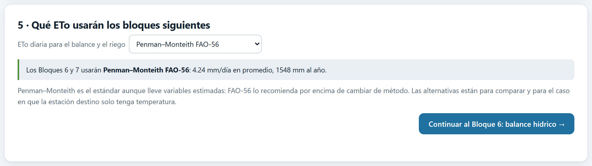
Con el Bajío la app dice: «Los Bloques 6 y 7 usarán Penman–Monteith FAO-56: 4.24 mm/día en promedio, 1548 mm al año.» Penman–Monteith es el estándar aunque lleve variables estimadas: FAO-56 lo recomienda por encima de cambiar de método. Las alternativas están para dos casos: comparar, y el estudio cuyo sitio destino solo tendrá temperatura, donde conviene calibrar Hargreaves aquí y llevarse el factor.
| Mensaje | Qué significa y qué hacer |
|---|---|
| Penman–Monteith se calculó en N días…; la humedad / la radiación / el viento se estimó en X % de los días | La frase de los datos estimados. No es un problema: es lo que el informe dirá. Si un porcentaje te sorprende, revisa los papeles de las columnas en el Bloque 2. |
| Atención: Penman–Monteith lleva variables estimadas, así que la calibración compara dos estimaciones | La calibración de Hargreaves es orientativa; no la reportes como calibración local definitiva. |
| Penman–Monteith se calculó con todas las variables medidas, así que esta calibración es la real del sitio | Lo contrario: la estación mide todo y el factor k y la regresión valen para la región. |
| Los Bloques 6 y 7 usarán… | Confirma el método elegido; al cambiarlo, el balance y el riego se rehacen al abrirlos. |
| Primero hace falta una serie | Vuelve al Bloque 2. |
Cuánta agua pide el cultivo, cuánta le da la lluvia y cuánta queda en el suelo, día por día y año por año. El balance diario de la zona radical de FAO-56 con la curva de Kc del cultivo, la lluvia efectiva, el escurrimiento, la percolación y el coeficiente de estrés; el rendimiento relativo que el agua permite según FAO-33; el balance por etapa y por fecha de siembra; y la necesidad climática de riego de cada mes.
Entre la capacidad de campo (lo que el suelo retiene después de drenar) y el punto de marchitez permanente (lo que la planta ya no puede extraer) hay una lámina de agua por cada metro de suelo: el agua disponible total (ADT; TAW en inglés). Multiplicada por la profundidad de raíces del día es la cubeta del cultivo. La planta toma sin esfuerzo solo una fracción p de ella, el agua fácilmente aprovechable (AFA; RAW); pasado ese punto cierra estomas y transpira menos de lo que la atmósfera pide.
El balance lleva la cuenta del agotamiento Dr, lo que le falta a la cubeta para estar llena: la lluvia que entra (menos el escurrimiento) y el riego lo reducen; la ETc real, que es ETc × Ks, lo aumenta; lo que sobra cuando la cubeta ya está llena se va por percolación profunda. La ETc es Kc × ETo, con el Kc del cultivo en cuatro tramos —inicial, desarrollo, media estación y final— corregido al viento y la humedad de cada temporada (ecuación 62). Y el rendimiento que el agua permite se estima con la función estacional de FAO-33:
No toda la lluvia entra al suelo. La app quita primero el escurrimiento con el método del número de curva del NRCS (más escurrimiento en arcillas, suelos compactados o desnudos; menos en arenas con cobertura) y después deja que la cubeta decida: lo que cabe se queda, lo que no, se percola. Esa es la lluvia efectiva del balance diario, y difiere de las fórmulas mensuales del USDA-SCS o de la FAO que usa la tarjeta 5 para la necesidad climática regional.
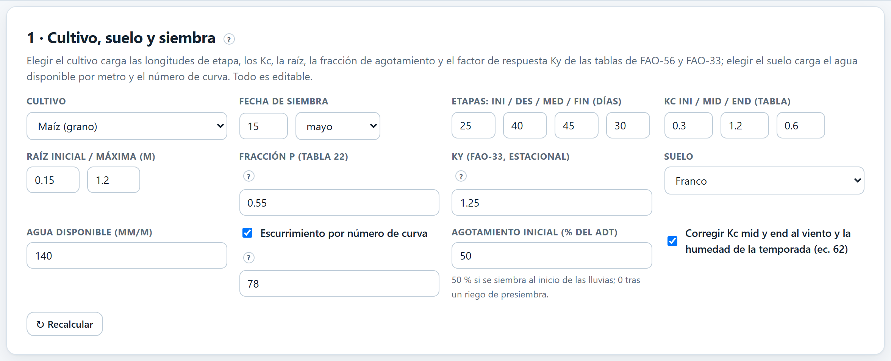
| Control | Qué es | Maíz · franco |
|---|---|---|
| Cultivo y Fecha de siembra | Uno de los 19 del catálogo y el día en que arranca el balance en cada año. | Maíz (grano) · 15 may |
| Etapas: ini / des / med / fin (días) | Las longitudes de los cuatro tramos del Kc (FAO-56, tabla 11). Su suma es el ciclo del balance. | 25 / 40 / 45 / 30 = 140 días |
| Kc ini / mid / end (tabla) | Los de la tabla 12 de FAO-56 para el clima de referencia. | 0.30 / 1.20 / 0.60 |
| Corregir Kc mid y end al clima | Aplica la ecuación 62 con el viento y la humedad mínima de cada temporada: en aire seco y con viento el Kc sube. | activado |
| Raíz inicial / máxima (m) | La profundidad de la cubeta crece linealmente de la inicial a la máxima hasta el fin del desarrollo. | 0.15 / 1.2 |
| Fracción p (Tabla 22) | La parte del ADT que se agota sin estrés, para una ETc de 5 mm/día; la app la ajusta cada día a la ETc real (nota de la tabla 22). | 0.55 |
| Ky (FAO-33, estacional) | El factor de respuesta del rendimiento al déficit de agua de toda la temporada. | 1.25 |
| Suelo y Agua disponible (mm/m) | Una de las siete texturas, o — Propio — para escribir el ADT medido. | Franco · 140 mm/m |
| Escurrimiento y número de curva | Activa el escurrimiento por número de curva (NRCS); el suelo trae el suyo. | CN 78 |
| Agotamiento inicial (% del ADT) | Cuánto le falta a la cubeta el día de la siembra. 50 % es un suelo a medio llenar tras la seca; 0 es capacidad de campo. | 50 % |
| Si el ADT es menor de 90 mm/m | entonces es bajo (arenosos): la cubeta se vacía en pocos días y el riego debe ser frecuente y ligero. |
| Si está entre 90 y 140 | entonces es medio (francos ligeros). |
| Si pasa de 140 | entonces es alto (francos y arcillas): más margen entre lluvias y riegos más espaciados. |
| Si tienes el ADT medido en la parcela | entonces úsalo con — Propio —: las texturas del catálogo son promedios (FAO-56, tabla 19). |
El número de curva también tiene su escala en la ficha Escurrimiento: menos de 60 escurre poco; más de 85, casi todo.
La tarjeta 2 corre el balance sin riego en cada uno de los veinte años y resume con medianas y percentiles. El párrafo de abajo lo lee y la figura muestra el año elegido en el selector (por omisión, el año mediano por rendimiento):
«En temporal, Maíz (grano) sembrado el 15 de mayo en un suelo de 140 mm/m obtiene en el año mediano el 87 % de su rendimiento potencial (FAO-33, Ky = 1.25); en uno de cada cinco años, menos del 68 %, y en 0 % de los años cae por debajo del 50 %. La etapa que más sufre es la media estación (Ks mediano 0.88). El Bloque 7 calcula cuántos riegos cerrarían ese déficit.»
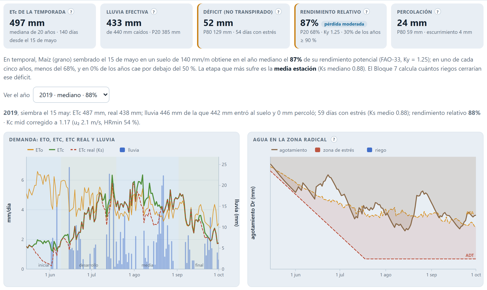
| Recuadro | Qué dice | En el Bajío (medianas) |
|---|---|---|
| ETc de la temporada | La demanda del cultivo sin estrés en los 140 días. | 497 mm |
| Lluvia efectiva | La que entró al suelo, de la que cayó; con su P20. | 433 de 440 mm · P20 385 |
| Déficit (no transpirado) | ETc menos ETc real: el agua que la planta pidió y no tuvo; con el P80 y los días con estrés. | 52 mm · P80 129 · 54 días |
| Rendimiento relativo | Ya/Ym por FAO-33, con su clase, el P20, el Ky y la fracción de años ≥ 90 %. | 87 %, pérdida moderada · P20 68 % · 30 % de los años ≥ 90 % |
| Percolación | El agua que pasó bajo las raíces, con el P80 y el escurrimiento. | 24 mm · P80 59 · escurrimiento 4 |
La línea bajo el selector describe el año visto: «2019, siembra el 15 may: ETc 487 mm, real 438 mm; lluvia 446 mm de la que 442 mm entró al suelo y 0 mm percoló; 59 días con estrés (Ks medio 0.88); rendimiento relativo 88 % · Kc mid corregido a 1.17 (u₂ 2.1 m/s, HRmin 54 %)». El Kc medio de la tabla era 1.20 y bajó a 1.17 porque la humedad mínima de la temporada es más alta que el 45 % de referencia. ⤓ Balance diario del año visto (.csv) descarga ese año día por día.
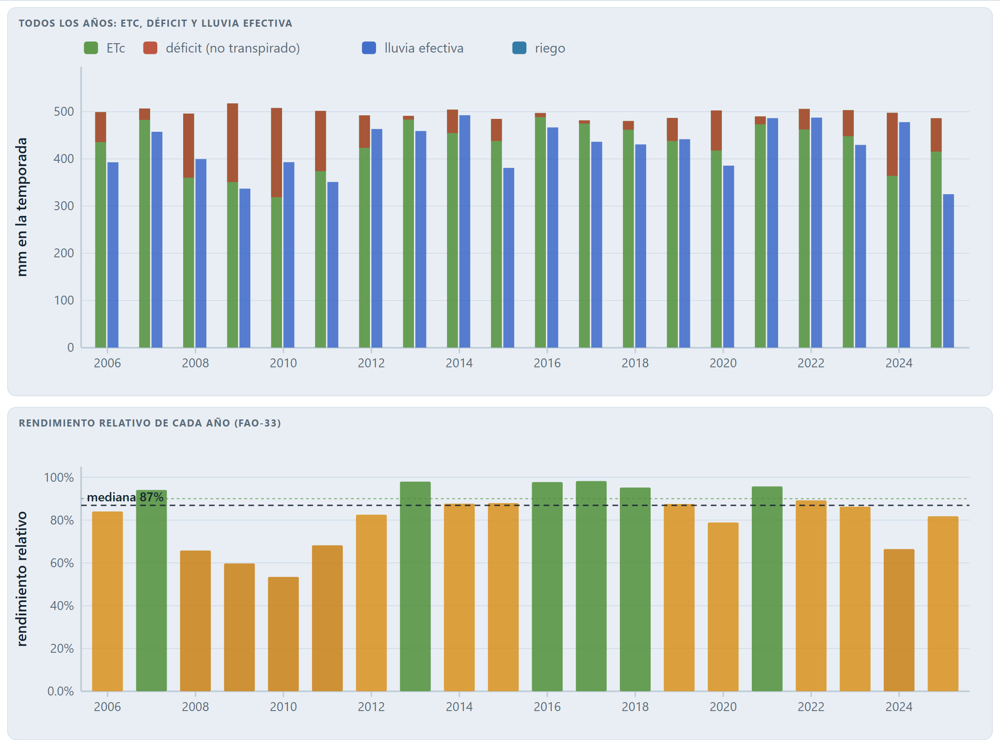
El cuadro por año, plegado bajo las figuras, separa el temporal en tres clases de años. Los buenos: 2013, 2016 y 2017, con 98 % de rendimiento, menos de 10 mm de déficit y Ks medio de 0.97. Los regulares: 2006, 2014, 2015 y 2019, entre 84 y 88 %. Y los malos: 2008 (66 %), 2009 (60 %), 2011 (68 %) y sobre todo 2010, con 53 %: 189 mm de déficit, 93 días con estrés y un Ks medio de 0.64, porque la lluvia efectiva se quedó en 393 mm y cayó a destiempo. Uno de cada cinco años es de esos: es lo que dice el P20 de 68 %.
| Si Ya/Ym es 0.90 o más | entonces no hay pérdida apreciable por agua. |
| Si está entre 0.75 y 0.90 | entonces la pérdida es moderada: el riego de auxilio la cierra. |
| Si está entre 0.50 y 0.75 | entonces es severa: el temporal no basta la mayoría de los años. |
| Si es menor de 0.50 | entonces la cosecha está comprometida. |
| Si el P20 cae dos clases por debajo de la mediana | entonces el problema es la variabilidad, no la media: mira el año seco y el Bloque 7. |
La escala es la de la ficha Rendimiento relativo y factor Ky (FAO-33, tabla 24). El Ky del maíz, 1.25, quiere decir que cada 10 % de déficit de agua cuesta 12.5 % de rendimiento.
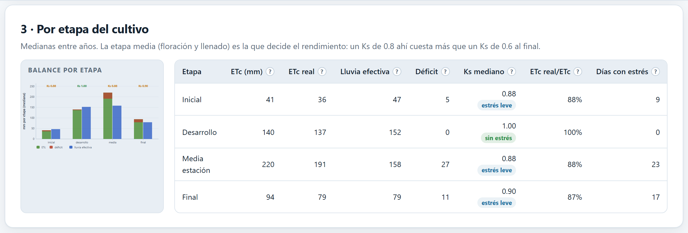
| Etapa | ETc | ETc real | Lluvia efectiva | Déficit | Ks mediano | ETc real/ETc | Días con estrés |
|---|---|---|---|---|---|---|---|
| Inicial (25 d) | 41 | 36 | 47 | 5 | 0.88 leve | 88 % | 9 |
| Desarrollo (40 d) | 140 | 137 | 152 | 0 | 1.00 | 100 % | 0 |
| Media estación (45 d) | 220 | 191 | 158 | 27 | 0.88 leve | 88 % | 23 |
| Final (30 d) | 94 | 79 | 79 | 11 | 0.90 leve | 87 % | 17 |
La lectura agronómica está en la tercera fila: en la media estación el maíz pide 220 mm y la lluvia efectiva da 158, así que el suelo pone la diferencia hasta que se agota y aparecen 23 días con estrés. Como dice la app, «un Ks de 0.8 ahí cuesta más que un Ks de 0.6 al final». Es la etapa donde un riego de auxilio rinde más, y el Bloque 7 lo comprueba.
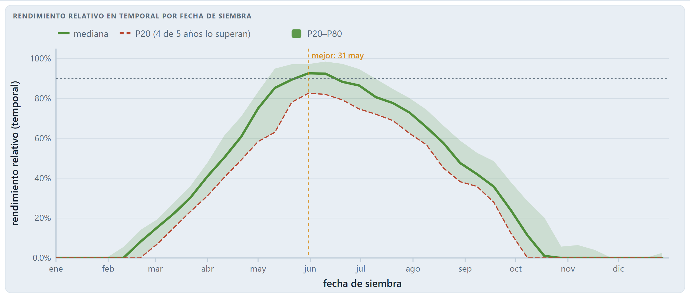
«En temporal, la fecha con mejor rendimiento garantizado (P20 más alto) es el 31 may: 93 % en el año mediano y 83 % en cuatro de cada cinco años. Este mapa solo mira el agua; el Bloque 9 lo cruza con el calor y las heladas.»
El cuadro plegado muestra la forma completa de la curva: sembrar en marzo, que térmicamente era lo mejor, da 15–30 % de rendimiento en temporal porque el ciclo cae en la seca; el 1 de mayo ya da 75 % (P20 58 %); del 21 de mayo al 10 de junio está el máximo, 89–93 % con P20 de 78–83 %; y desde julio baja de nuevo porque el llenado de grano cae en octubre, cuando las lluvias terminan. El Bloque 4 decía «marzo», el Bloque 6 dice «fin de mayo»: el Bloque 9 es el que decide.
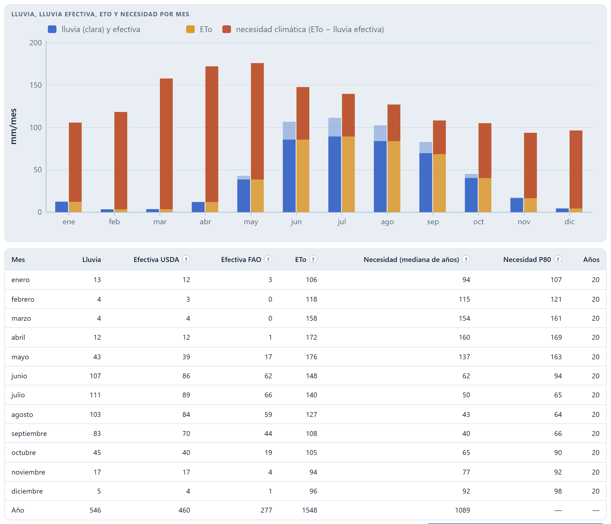
La última tarjeta no depende del cultivo: es la ETo del mes menos la lluvia efectiva calculada con la fórmula mensual del USDA-SCS (y, para comparar, la de la FAO). Es el número que un plan de riego regional o el dimensionamiento de una bomba necesita antes de conocer el cultivo. En el Bajío la necesidad anual es de 1089 mm en la mediana: de 137 a 160 mm al mes de febrero a mayo, cuando no llueve y la ETo es máxima, y de 40 a 62 mm en pleno verano. Ni en julio, el mes más lluvioso, la lluvia efectiva (89 mm) alcanza a la ETo (140): el Bajío es de riego complementario todo el año.
| Mensaje | Qué significa y qué hacer |
|---|---|
| Hacen falta la serie y la ETo | El bloque necesita el Bloque 2 y el Bloque 5; los botones llevan a cada uno. El Bloque 5 se calcula solo al abrirlo. |
| En temporal, … obtiene en el año mediano el X % de su rendimiento potencial… | El veredicto del temporal. Si el P20 es bajo, el riego de auxilio del Bloque 7 es el siguiente paso. |
| … Kc mid corregido a X (u₂, HRmin) | La corrección al clima de la ecuación 62 estuvo activa; el valor de la tabla se ajustó al viento y la humedad de esa temporada. |
| Rellenos en el cuadro por año | Días de la temporada sin ETo o sin lluvia que el balance rellenó con la mediana del día del año; si son muchos, revisa la serie. |
Cuándo y cuánto regar. Sobre el mismo balance del Bloque 6, este bloque aplica la regla de riego que elijas —al agotar el agua fácilmente aprovechable, con déficit controlado, a intervalo fijo o con lámina fija— en cada año del registro, y entrega el calendario del año, las láminas netas y brutas según la eficiencia del sistema, la comparación de cuatro estrategias, el riego por mes, la capacidad de diseño que el sistema necesita y el ahorro frente a regar por costumbre.
Un calendario de riego contesta dos preguntas con el balance de la cubeta: cuándo —el día en que el agotamiento llega al límite que la regla fija— y cuánto —la lámina que devuelve el suelo a capacidad de campo, o una lámina fija—. La lámina neta es la que llega a la zona radical; la bruta, la que el sistema tiene que aplicar para que llegue esa, y depende de su eficiencia: 60 % en gravedad, 75 % en aspersión, 90 % en goteo.
Al agotar el AFA (FAO-56, capítulo 8): se riega el día en que el agotamiento alcanza el agua fácilmente aprovechable, justo antes de que empiece el estrés, y se rellena a capacidad de campo. Es la regla de referencia: máximo rendimiento con el mínimo de agua que lo consigue. Déficit controlado: se deja pasar el AFA hasta un múltiplo (130 % por omisión) antes de regar; se acepta algo de estrés a cambio de menos riegos y menos percolación. Intervalo fijo: se riega cada N días, rellenando; es la regla de un módulo de riego con turnos. Lámina fija: se aplica siempre la misma lámina cuando el agotamiento la iguala; es la regla de un sistema que solo sabe dar una dosis. Todas se pueden restringir con días sin riego tras la siembra y antes de la cosecha y con el intervalo mínimo que el sistema permite.
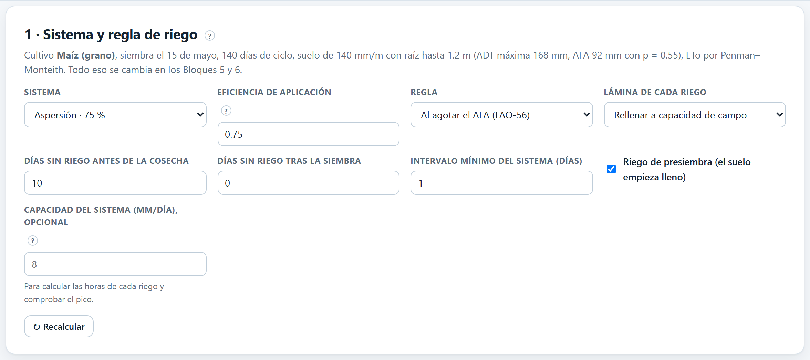
| Control | Qué hace |
|---|---|
| Sistema y Eficiencia de aplicación | Gravedad (60 %), aspersión (75 %), pivote central y microaspersión (85 %), goteo (90 %) o — Otra eficiencia — para escribirla. Solo afecta la lámina bruta. |
| Regla | Al agotar el AFA (FAO-56), Déficit controlado (más allá del AFA) con su múltiplo, Intervalo fijo con sus días, o Lámina fija. |
| Lámina de cada riego | Rellenar a capacidad de campo o Lámina neta fija en mm. |
| Días sin riego antes de la cosecha / tras la siembra | Para secar el grano al final, o porque la siembra se hizo en húmedo. 10 y 0 por omisión. |
| Intervalo mínimo del sistema (días) | El turno más corto que el sistema permite; un riego que la regla pida antes se pospone. |
| Capacidad del sistema (mm/día), opcional | Si se escribe, el calendario dice cuántas horas dura cada riego y si la capacidad alcanza para el pico. |
| Suelo a capacidad de campo al sembrar | Anula el agotamiento inicial del Bloque 6: un riego de presiembra. |
| Si la eficiencia es menor de 60 % | entonces es gravedad mal nivelada: antes que calendarizar, nivelar. |
| Si está entre 60 y 75 % | entonces es gravedad bien manejada o aspersión con viento. |
| Si está entre 75 y 88 % | entonces aspersión, pivote o microaspersión. |
| Si pasa de 88 % | entonces goteo bien mantenido. |
Escala de la ficha Eficiencia de aplicación (Brouwer et al. 1989). La eficiencia no cambia el rendimiento del balance: cambia cuánta agua hay que bombear.
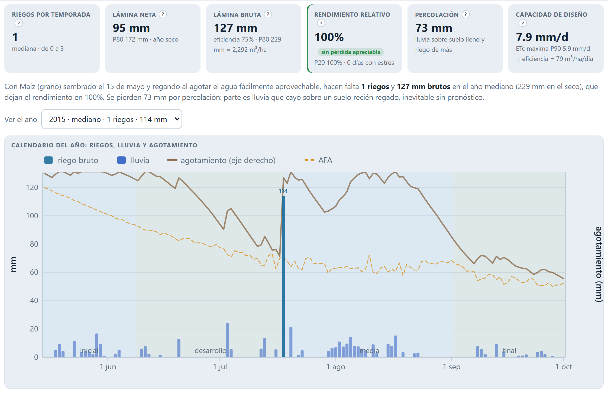
| Recuadro | Qué dice | En el Bajío |
|---|---|---|
| Riegos por temporada | La mediana entre años y el rango. | 1 · de 0 a 3 |
| Lámina neta | La suma de las láminas netas de la temporada; con el P80, el año seco. | 95 mm · P80 172 |
| Lámina bruta | La neta entre la eficiencia, con el P80 en mm y en m³/ha. | 127 mm · P80 229 = 2,292 m³/ha |
| Rendimiento relativo | El que deja la regla, con su clase, el P20 y los días con estrés. | 100 % · P20 100 % · 0 días |
| Percolación | Lluvia sobre suelo lleno y riego de más. | 73 mm |
| Capacidad de diseño | La ETc máxima de la media estación (P90 de los días entre años) entre la eficiencia. | 7.9 mm/día = 79 m³/ha/día |
«Con Maíz (grano) sembrado el 15 de mayo y regando al agotar el agua fácilmente aprovechable, hacen falta 1 riegos y 127 mm brutos en el año mediano (229 mm en el seco), que dejan el rendimiento en 100 %. Se pierden 73 mm por percolación: parte es lluvia que cayó sobre un suelo recién regado, inevitable sin pronóstico.»
En el Bajío el maíz de temporal se queda en 87 %; un solo riego de auxilio de 114 mm brutos —en 2015, el 18 de julio, a los 65 días, en pleno desarrollo, con la cubeta a 86 mm de agotamiento y un AFA de 85— lo lleva al 100 %. En el año seco hacen falta dos riegos y 229 mm brutos. Es el argumento cuantitativo del riego complementario: poca agua en el momento exacto.
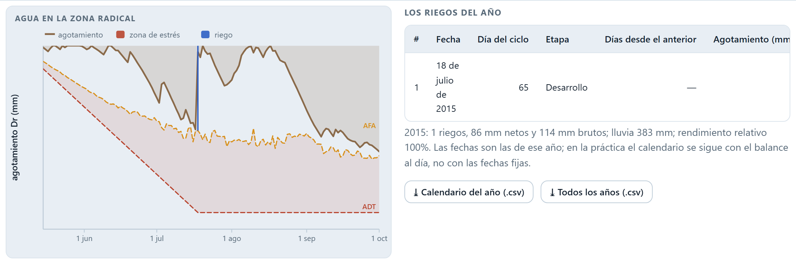
La app lo advierte bajo la tabla: «Las fechas son las de ese año; en la práctica el calendario se sigue con el balance al día, no con las fechas fijas.» El calendario histórico dice cuántos riegos y de cuánto esperar, y en qué etapa suelen caer; el día concreto del riego del año que viene lo decide el balance corrido con la lluvia y la ETo de ese año, que es exactamente lo que este bloque hace con cada año del registro.
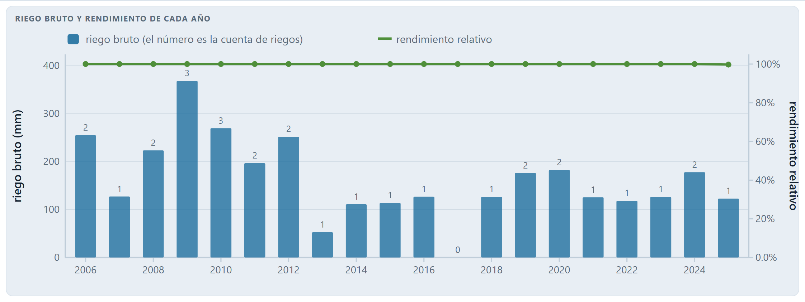
La tarjeta 3 corre las mismas veinte temporadas con cada regla —y con el temporal como referencia— usando los valores de déficit, intervalo y lámina escritos arriba:
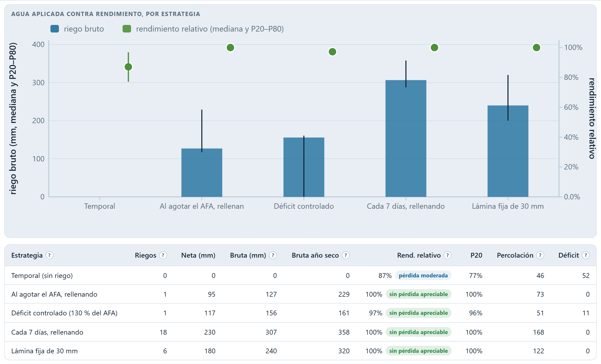
| Estrategia | Riegos | Neta | Bruta | Bruta año seco | Rend. relativo | P20 | Percolación | Déficit |
|---|---|---|---|---|---|---|---|---|
| Temporal (sin riego) | 0 | 0 | 0 | 0 | 87 % | 77 % | 46 | 52 |
| Al agotar el AFA, rellenando | 1 | 95 | 127 | 229 | 100 % | 100 % | 73 | 0 |
| Déficit controlado (130 % del AFA) | 1 | 117 | 156 | 161 | 97 % | 96 % | 51 | 11 |
| Cada 7 días, rellenando | 18 | 230 | 307 | 358 | 100 % | 100 % | 168 | 0 |
| Lámina fija de 30 mm | 6 | 180 | 240 | 320 | 100 % | 100 % | 122 | 0 |
La app lo lee: «Regar al agotar el AFA sube el rendimiento relativo de 87 % (temporal) a 100 % con 127 mm brutos: cada 100 mm brutos compran 10 % de rendimiento.» Y sobre el déficit controlado, que aquí no ahorra: al esperar hasta el 130 % del AFA riega más tarde y rellena una cubeta más vacía, así que aplica 29 mm más que la regla de referencia y pierde 3 % de rendimiento. El intervalo fijo de siete días riega dieciocho veces y percola 168 mm; la lámina fija de 30 mm, seis veces con 122 mm percolados. Lo que apliquen de más percola, lo que apliquen de menos se paga en estrés.
| Si el sistema puede regar cualquier día | entonces al agotar el AFA: es la que menos agua usa para el máximo rendimiento. |
| Si el agua es el recurso escaso y el cultivo lo tolera | entonces déficit controlado, solo si la tabla muestra que de verdad ahorra (con lluvias de verano, a veces no). |
| Si el riego es por turnos de un módulo | entonces intervalo fijo con el turno real, y acepta la percolación que la tabla muestra. |
| Si el sistema solo da una dosis | entonces lámina fija, con la lámina ajustada al AFA de la media estación. |
Compara siempre la columna del año seco: es la que dimensiona la fuente de agua.
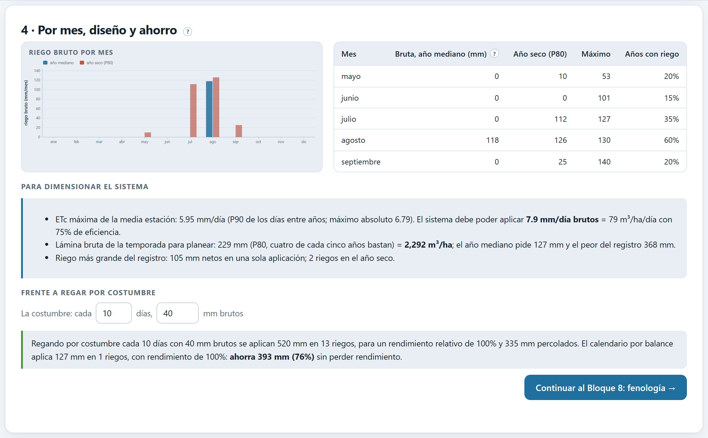
El riego del Bajío se concentra en agosto: 118 mm brutos en el año mediano, 126 en el seco, y riego en el 60 % de los años. Julio pide riego en el 35 % de los años (112 mm en el seco); mayo, junio y septiembre, en menos de uno de cada cinco. Es la canícula: la pausa de las lluvias de agosto coincide con la media estación del maíz.
«ETc máxima de la media estación: 5.95 mm/día (P90 de los días entre años; máximo absoluto 6.79). El sistema debe poder aplicar 7.9 mm/día brutos = 79 m³/ha/día con 75 % de eficiencia. Lámina bruta de la temporada para planear: 229 mm (P80, cuatro de cada cinco años bastan) = 2,292 m³/ha; el año mediano pide 127 mm y el peor del registro 368 mm. Riego más grande del registro: 105 mm netos en una sola aplicación; 2 riegos en el año seco.»
La capacidad dimensiona la bomba y la red: debe reponer el día más exigente de la media estación, no el promedio. La lámina de planeación dimensiona la fuente —el pozo, la presa, la concesión— para que cuatro de cada cinco años alcance. Y el riego más grande dice si el sistema puede aplicar esa lámina de una vez o si hay que partirla.
La última tarjeta compara con la costumbre —cada 10 días con 40 mm brutos, editables— y en el Bajío dice: «Regando por costumbre cada 10 días con 40 mm brutos se aplican 520 mm en 13 riegos, para un rendimiento relativo de 100 % y 335 mm percolados. El calendario por balance aplica 127 mm en 1 riegos, con rendimiento de 100 %: ahorra 393 mm (76 %) sin perder rendimiento.» Es el número que convence a un productor: el mismo rendimiento con la cuarta parte del agua y de las horas de bombeo.
| Mensaje | Qué significa y qué hacer |
|---|---|
| Hace falta el balance del Bloque 6 | El riego se calcula sobre el balance; abre el Bloque 6 (que se calcula solo) y vuelve. |
| Cultivo …, siembra el …, suelo de … mm/m con raíz hasta … m (ADT máxima, AFA con p). Todo eso se cambia en los Bloques 5 y 6 | La línea que recuerda lo heredado. Si el AFA te parece pequeño o grande, el suelo y la p se editan en el Bloque 6. |
| El déficit controlado no ahorra aquí: aplica X más… | Con lluvias de verano, esperar más para regar puede obligar a rellenar una cubeta más vacía. La regla de referencia es la que conviene. |
| Las fechas son las de ese año; en la práctica el calendario se sigue con el balance al día | No entregues el calendario de un año como calendario fijo: entrega la regla, las láminas y las etapas en que caen. |
| … la capacidad escrita no alcanza para el pico | Con una capacidad del sistema menor que la de diseño, el riego del pico tarda más de 24 horas: hay que partir la parcela en secciones o aumentar el gasto. |
Cuándo emerge, cuándo florece, cuándo madura. Las etapas del cultivo en la escala BBCH fechadas por su tiempo térmico en cada año del registro, con su fecha mediana y su dispersión; la calibración de los requerimientos con tus propias fechas observadas y la búsqueda de la temperatura base que menos varía; el frío del invierno para los frutales caducifolios en horas frío, unidades Utah y porciones de frío; y el fotoperiodo del sitio.
Un modelo fenológico de tiempo térmico tiene dos partes: la escala que nombra las etapas y el requerimiento de cada una en grados-día. La escala es la BBCH (Meier 2018): un código de dos cifras, igual para todos los cultivos, donde 09 es la emergencia, 65 la plena floración y 89 la madurez fisiológica; los cereales conservan además su código propio (V6, VT/R1, R6 en el maíz). El requerimiento es el que el Bloque 4 acumula: la etapa cae el día en que la suma desde la siembra cruza su valor.
El catálogo trae, para cada cultivo anual, cinco o seis etapas con requerimientos tomados de la literatura de extensión, y los llama orientativos en cada pantalla. Un requerimiento publicado en Iowa para un híbrido de 110 días no es el de un criollo del Bajío. Por eso la tarjeta de calibración es el corazón del bloque: con dos o tres años de fechas observadas en la parcela, la app calcula los requerimientos de tu cultivar en tu sitio, dice qué tan estables son y busca la base que los hace más estables.
Si la fenología dependiera del calendario, la floración caería siempre a los mismos días de la siembra. No lo hace: en el Bajío, el maíz sembrado el 15 de mayo floreció entre el 12 y el 26 de julio según el año. Si depende del calor, los °C·d hasta la floración deben variar menos entre años que los días. Ese es el criterio de Arnold (1959) para elegir la base: la temperatura base correcta es la que hace mínimo el coeficiente de variación del tiempo térmico entre años. La app lo aplica en la tarjeta 3 y compara el CV en °C·d con el CV en días.
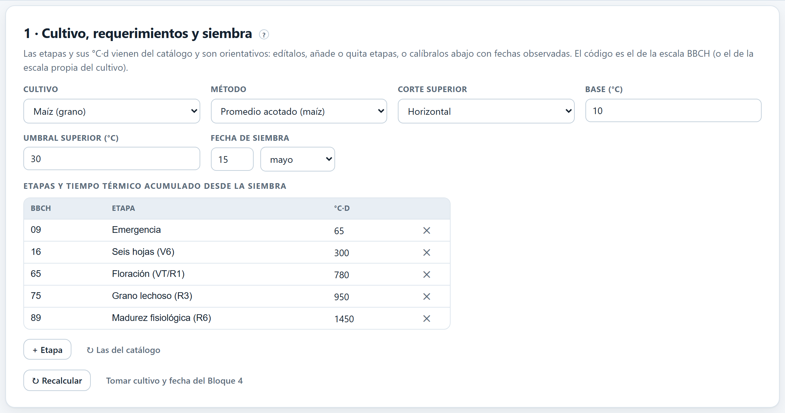
| BBCH | Etapa | °C·d |
|---|---|---|
| 09 | Emergencia | 65 |
| 16 | Seis hojas (V6) | 300 |
| 65 | Floración (VT/R1) | 780 |
| 75 | Grano lechoso (R3) | 950 |
| 89 | Madurez fisiológica (R6) | 1,450 |
La tabla se edita: cada celda acepta un valor nuevo, la ✕ quita una etapa, Añadir etapa agrega un renglón y Valores del catálogo restaura los originales. El método, la base y el umbral son los mismos del Bloque 4 y conviene que coincidan con la fuente del requerimiento. Los frutales caducifolios traen su escala propia (61 floración, 89 madurez) y la fecha es la del inicio de la brotación.
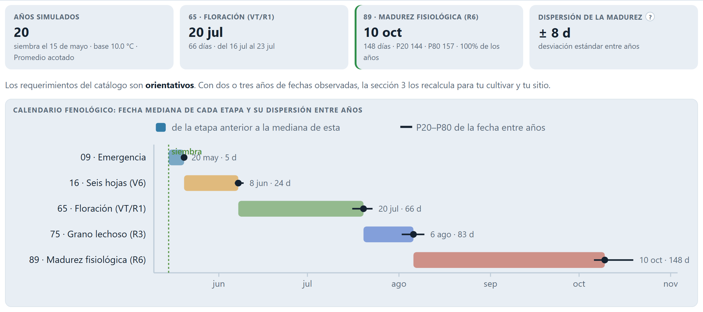
| BBCH | Etapa | °C·d | Fecha mediana | Días | P20 | P80 | ± días | Años que la alcanzan |
|---|---|---|---|---|---|---|---|---|
| 09 | Emergencia | 65 | 20 may | 5 | 20 may | 21 may | 1 | 100 % |
| 16 | Seis hojas (V6) | 300 | 8 jun | 24 | 6 jun | 9 jun | 2 | 100 % |
| 65 | Floración (VT/R1) | 780 | 20 jul | 66 | 16 jul | 23 jul | 4 | 100 % |
| 75 | Grano lechoso (R3) | 950 | 6 ago | 83 | 2 ago | 10 ago | 4 | 100 % |
| 89 | Madurez fisiológica (R6) | 1,450 | 10 oct | 148 | 6 oct | 19 oct | 8 | 100 % |
La dispersión crece con la etapa: un día en la emergencia, cuatro en la floración, ocho en la madurez, porque el otoño paga el calor más despacio y una semana fresca retrasa mucho. La figura de las etapas de cada año, y su cuadro (⤓ Fechas por año (.csv)), dan la fecha de cada etapa en cada uno de los veinte años: la madurez más temprana fue el 27 de septiembre de 2016 y la más tardía el 25 de octubre de 2025.
El Bloque 4 sembró el 15 de abril para explorar el calor; el Bloque 8 hereda del Bloque 6 la siembra del 15 de mayo, con las lluvias, que es la que el estudio sigue de aquí en adelante. Por eso la madurez pasa de 127 a 148 días: sembrar un mes más tarde mete el llenado de grano en octubre, cuando el calendario térmico va a 6 °C·d por día. El Bloque 9 cruza esa fecha con el agua y las heladas.
La tarjeta 3 recibe las fechas que se hayan observado en campo, una línea por observación: año; etapa; fecha (por ejemplo 2019; 65; 25/07/2019). Si la siembra de ese año no fue la de arriba, se escribe la fecha de siembra en lugar del año: 15/05/2019; 65; 25/07/2019. Para cada observación la app calcula los °C·d que ese año acumuló desde la siembra hasta esa fecha; con ellos, la media y la variación de cada etapa entre años; y con tres o más años, la base de Arnold.
Cargar observaciones de ejemplo escribe veinte fechas ficticias de floración y madurez de diez años alternos, y Calcular con las observaciones las lee: «20 observaciones de 20 leídas. Con la etapa 65 (10 años), el tiempo térmico varía menos entre años con base 13.5 °C (CV 3.5 %) frente a 3.6 % con la base actual de 10.0 °C; considera cambiarla.»
| BBCH | Etapa | Años | Catálogo | Observado (media) | Mín. | Máx. | CV | Días (media) | CV en días |
|---|---|---|---|---|---|---|---|---|---|
| 65 | Floración | 10 | 780 | 796 | 755 | 846 | 3.6 % excelente | 66 | 8.1 % |
| 89 | Madurez | 10 | 1,450 | 1,450 | 1,423 | 1,480 | 1.3 % excelente | 149 | 6.4 % |
Los °C·d observados varían 3.6 % entre años y los días 8.1 %: el tiempo térmico explica la floración mejor que el calendario, que es lo que un modelo de grados-día promete. La diferencia entre la base actual (CV 3.6 %) y la de Arnold (3.5 %) es despreciable aquí, así que no vale la pena cambiar la base; Usar también la base de Arnold la aplicaría. Las observaciones de ejemplo se generaron con el propio modelo y por eso calzan tan bien: con fechas reales los CV son mayores y ahí es donde la tabla informa de verdad.
| Si el CV del tiempo térmico a la etapa es menor de 5 % | entonces excelente: usa la media observada como requerimiento. |
| Si está entre 5 y 10 % | entonces bueno: úsala y reporta el rango. |
| Si está entre 10 y 20 % | entonces utilizable: revisa la base (Arnold) y el fotoperiodo. |
| Si pasa de 20 % | entonces otra cosa manda: agua, fotoperiodo o cultivar; el tiempo térmico solo no basta. |
| Si el CV en °C·d no es menor que el CV en días | entonces el modelo térmico no gana nada al calendario para esa etapa. |
Escala de la ficha Calibrar los requerimientos térmicos. Con dos años no hay CV que valga; con tres empieza a decir algo; con cinco se puede publicar.
Manzano, durazno, peral, nogal: los caducifolios entran en reposo en otoño y necesitan una dosis de frío para salir de él y florecer parejo. Si el invierno no la da, la brotación se retrasa y se desordena, y la cosecha se pierde. La tarjeta 4 la cuenta con los tres modelos que se usan, sobre la ventana de invierno que se elija (de noviembre a febrero en el hemisferio norte por omisión).
| Modelo | Cómo cuenta |
|---|---|
| Horas frío (Weinberger 1950) | Cada hora entre 0 y 7.2 °C vale una. Simple y todavía muy citada; no descuenta el calor. |
| Unidades Utah (Richardson, Seeley y Walker 1974) | Cada hora vale entre −1 y +1 según su temperatura: máximo entre 2.5 y 9.1 °C, cero cerca de 0 y de 13 °C, negativo por encima de 16 °C. En climas cálidos el total puede salir negativo, y entonces el modelo no sirve. |
| Porciones de frío, modelo dinámico (Fishman, Erez y Couvillon 1987) | El frío se acumula en un intermediario que el calor puede destruir hasta que se fija en una porción; una porción fijada ya no se pierde. Es el modelo más robusto en climas templados cálidos y el que se recomienda comparar entre sitios (Luedeling 2012). |
Los tres necesitan temperaturas horarias. Cuando la estación solo da máxima y mínima, la app reconstruye las 24 horas de cada día con el método de Linvill (1990): una senoide de día y un enfriamiento logarítmico de noche, con la duración del día que salen de la latitud y la fecha. El sello del Bloque 2 lo anuncia: «Frío invernal (horas estimadas de Tmax/Tmin)».
El Bajío no es sitio de caducifolios (12.4 porciones en el invierno mediano, muy poco frío; las unidades Utah salen negativas y la app advierte que ahí no valen). Para enseñar la tarjeta se usa el Valle templado (2 250 m) con el manzano:
«Entre noviembre y febrero el sitio acumula 27.0 porciones de frío en el invierno mediano y 21.2 en uno de cada cinco inviernos cálidos (392 unidades Utah, 541 horas frío). Un cultivar de 58 porciones no cubre su frío casi ningún invierno (0 %): el sitio no es para él.»
El catálogo dice del manzano: 45–70 porciones (800–1200 unidades Utah, 800–1400 horas frío) según el cultivar; se toma el centro del rango, 58. El valle da menos de la mitad: entre 18.8 (2012–13) y 39.8 (2007–08) porciones según el invierno. Un manzano de alto requerimiento no prospera ahí; un durazno de bajo requerimiento (20–30 porciones) sí la mayoría de los inviernos, y el campo Requerimiento permite probarlo. Con un requerimiento que sí se cubre, la tabla dice en qué fecha se cubrió cada invierno y, si se escribe la meta de grados-hora de crecimiento (GDH), en qué fecha florecería.
| Si el invierno mediano da menos de 20 porciones | entonces muy poco frío: solo cultivares de bajo requerimiento, y con riesgo. |
| Si da de 20 a 45 | entonces frío medio: durazno y ciruelo de requerimiento medio. |
| Si da de 45 a 70 | entonces frío alto: manzano, peral, cerezo. |
| Si da más de 70 | entonces frío muy alto: zonas de invierno largo. |
| Si las unidades Utah salen negativas | entonces el sitio es demasiado cálido para ese modelo: fíate de las porciones. |
Decide con el P20 (uno de cada cinco inviernos cálidos), no con la mediana: un huerto vive treinta años.
La duración del día depende solo de la latitud y la fecha (Forsythe et al. 1995). La app da dos: el sol sobre el horizonte y el día con crepúsculo civil, con el sol a −6°, que es el que las plantas sensibles perciben. Para el maíz del Bajío escribe: «En la floración prevista el día dura 14.0 h (13.9 h al sembrar, días alargándose). Este cultivo se considera poco sensible al fotoperiodo; el tiempo térmico basta para fecharlo.» En un cultivo sensible —soya, sorgo, frijol de día corto, cebolla— la misma línea advierte que el tiempo térmico solo no basta, y esa es la primera sospecha cuando la calibración da un CV alto.
| Mensaje | Qué significa y qué hacer |
|---|---|
| Los requerimientos del catálogo son orientativos. Con dos o tres años de fechas observadas, la sección 3 los recalcula | Recordatorio permanente hasta que se calibra. El informe llama a los requerimientos «orientativos» o «calibrados con fechas observadas» según el caso. |
| N observaciones de M leídas | Las que no se leyeron tienen una fecha o un código que la app no entendió; revisa el formato año; etapa; fecha. |
| … el tiempo térmico varía menos entre años con base X °C (CV …) frente a … con la base actual; considera cambiarla | La base de Arnold. Si la mejora es de décimas, no cambies nada; si es de puntos, aplícala y vuelve a fechar. |
| Las unidades Utah salen negativas en algún invierno: el modelo Utah no sirve en climas tan cálidos; fíate de las porciones | Reporta porciones de frío; las Utah y las horas frío solo como referencia. |
| Un cultivar de N porciones no cubre su frío casi ningún invierno: el sitio no es para él | Prueba un requerimiento menor en el campo Requerimiento antes de descartar la especie. |
| Este cultivo se considera sensible al fotoperiodo… | Las fechas por tiempo térmico pueden fallar en cultivares de día corto o largo; calibra y mira el CV en días. |
Qué puede salir mal y cuándo. La helada y el golpe de calor en cada etapa del cultivo, año por año; la ventana de siembra que junta en una sola probabilidad de éxito la madurez, la helada, el calor y el agua de temporal; y qué le pasa al calendario, a la demanda de agua y al frío invernal si el sitio se calienta 1, 2 o 3 °C. Es el bloque donde se toma la decisión, y donde más veces se vuelve a los bloques anteriores.
No importa que hiele: importa que hiele en la floración. No importa que haga calor: importa que pase de 35 °C cuando el polen del maíz está en el aire. Los Bloques 3 a 8 dieron cada pieza por separado —las heladas del sitio, el calor disponible, el agua del temporal, las fechas de las etapas—; este bloque las pone en el mismo calendario y pregunta, para cada año del registro, si todo salió bien a la vez.
Tres herramientas. El riesgo por etapa cuenta, dentro de la ventana de cada etapa de cada año, los días con Tmin bajo el umbral de helada y con Tmax sobre el umbral de calor. La ventana de siembra repite el ejercicio para cada fecha del año y añade el agua: una fecha tiene éxito en un año si el cultivo maduró, la etapa sensible no vio helada ni golpe de calor y el rendimiento en temporal alcanzó el mínimo exigido. Y los escenarios desplazan las temperaturas de toda la serie y rehacen la fenología, el riesgo, la ETo, el balance y el frío, como análisis de sensibilidad.
Unas horas por encima de un umbral en floración bastan para perder cosecha: el polen del maíz muere y la seda se seca por encima de 35 °C; el trigo aborta flores por encima de 30–32 °C en antesis; el jitomate y el chile no amarran fruto con máximas de 32–33 °C; el frijol pierde flores sobre 32 °C (Hatfield y Prueger 2015; Porter y Gawith 1999). El catálogo trae un umbral por cultivo; es una convención de trabajo, editable, y el daño real depende de la duración y de la humedad del aire. Un día aislado no siempre daña; una racha de tres, casi siempre.
| Control | Qué hace |
|---|---|
| Cultivo y Fecha de siembra | El cultivo y sus etapas se heredan del Bloque 8 si se calcularon ahí (calibradas o no); si no, del catálogo. La fecha se hereda del Bloque 6. |
| Helada: Tmin ≤ (°C) | El umbral del Bloque 3 por omisión; 2 °C para cultivos sensibles. |
| Golpe de calor: Tmax ≥ (°C) | El del catálogo para el cultivo (35 para el maíz, 32 para el frijol y el jitomate…). |
| Etapa sensible | La etapa en que la helada y el calor cuentan para el éxito: la floración en casi todos los cultivos. |
| La helada cuenta en | la etapa sensible o todo el ciclo. Un cultivo que muere con una helada en cualquier momento (jitomate, frijol) usa la segunda. |
| Rendimiento relativo mínimo (%) | El rendimiento en temporal (Bloque 6) por debajo del cual el año cuenta como fallido por agua; 75 % por omisión. |
| Éxito objetivo (% de los años) | La fracción de años que una fecha debe cumplir para entrar en la ventana; 80 % por omisión. |
| Escenarios | Los incrementos de temperatura (1, 2, 3 °C), el cambio de lluvia en % y si se calcula también el frío invernal. |
| BBCH | Etapa | Días | Años con helada | Días de helada | Mín. absoluta | Años con calor | Días de calor | Máx. absoluta |
|---|---|---|---|---|---|---|---|---|
| 09 | Emergencia | 6 | 0 % | 0.0 | 8.2 °C | 5 % | 0.1 | 35.8 °C |
| 16 | Seis hojas (V6) | 18 | 0 % | 0.0 | 10.7 °C | 20 % | 0.3 | 35.7 °C |
| 65 | Floración (VT/R1) sensible | 42 | 0 % | 0.0 | 7.7 °C | 5 % | 0.1 | 36.9 °C |
| 75 | Grano lechoso (R3) | 17 | 0 % | 0.0 | 5.0 °C | 0 % | 0.0 | 33.9 °C |
| 89 | Madurez fisiológica (R6) | 68 | 5 % | 0.1 | 0.0 °C | 0 % | 0.0 | 32.4 °C |
La app lo resume: «La helada entra en el ciclo en 5 % de los años, sobre todo en la etapa 89 (madurez fisiológica, 5 %). El calor por encima de 35 °C aparece en 25 % de los años, con más frecuencia en 16 (20 %).» Sembrado el 15 de mayo, el maíz del Bajío florece en pleno julio, cuando las lluvias ya bajaron las máximas: el calor de mayo y junio lo alcanza en las seis hojas, donde no daña, y la única helada del ciclo cae en octubre, sobre el grano ya hecho. Es una fecha bien puesta respecto a la temperatura.
| Si menos del 10 % de los años ven un día de calor en la etapa sensible | entonces el riesgo es bajo. |
| Si entre 10 y 25 % | entonces moderado: uno de cada cuatro a diez años. |
| Si entre 25 y 50 % | entonces alto: cambia la fecha o el cultivar. |
| Si más del 50 % | entonces muy alto. |
Para la helada vale la misma escala; la ficha Golpe de calor en la etapa sensible la trae.
La tarjeta 3 siembra el cultivo cada cinco días del año en cada año del registro y, para cada fecha y cada año, revisa cuatro condiciones: maduró; no hubo helada (en la etapa sensible o en el ciclo, según se eligió); no hubo golpe de calor en la etapa sensible; el rendimiento en temporal alcanzó el mínimo. El éxito de la fecha es la fracción de años en que las cuatro se cumplieron a la vez. No es el producto de las cuatro probabilidades: es la conjunción año por año, que es lo que le pasa a un productor.
«Ventana con al menos 80 % de éxito en el registro: del 21 may al 25 jun (mejor el 10 jun: 95 %, 180 días). Éxito significa que en ese año el cultivo maduró, no hubo helada en la etapa sensible, no hubo golpe de calor en la etapa sensible y el rendimiento relativo en temporal fue de al menos 75 %.»
Los tres bloques decían cosas distintas: el Bloque 4, que térmicamente lo mejor es marzo; el Bloque 6, que para el agua lo mejor es el 31 de mayo; el Bloque 3, que las lluvias empiezan el 6 de junio en la mediana. La ventana los concilia: del 21 de mayo al 25 de junio, con el óptimo el 10 de junio, cuando cuatro de cada cinco años el maíz madura, florece sin calor ni helada y el temporal rinde al menos el 75 %. Fuera de la ventana el éxito cae por el agua (antes) o porque el llenado se mete en el otoño seco y frío (después). El cuadro completo, cada cinco días, se descarga con ⤓ Ventana completa (.csv).
| Si el éxito es de 80 % o más | entonces es ventana recomendable: falla uno de cada cinco años o menos. |
| Si está entre 60 y 80 % | entonces es aceptable con riesgo: conviene seguro o riego. |
| Si es menor de 60 % | entonces evitar. |
| Si el criterio que tumba el éxito es el agua | entonces el riego lo arregla: rehaz la ventana con el rendimiento mínimo bajo y planea el riego del Bloque 7. |
| Si es la helada al final | entonces sembrar antes o un cultivar más precoz. |
| Si es el calor en floración | entonces mover la siembra para que florezca fuera del pico. |
Con menos de diez años el porcentaje es grueso (con cinco solo hay 0, 20, 40…); y el registro pasado no contiene el clima futuro: mira los escenarios.
La tarjeta 4 desplaza todas las temperaturas de la serie (máxima, mínima y media) en +1, +2 y +3 °C —y, si se pide, escala la lluvia— y repite los cálculos: la fenología, el riesgo por etapa, la ETo por Penman–Monteith, el balance en temporal y el frío invernal. Es el método delta, la forma más simple de análisis de sensibilidad al clima; no es un pronóstico y la app lo dice.
| Escenario | Días a madurez | Fecha | Madura | Días de helada | Días de calor | ETo anual | ETc temporada | Rend. temporal |
|---|---|---|---|---|---|---|---|---|
| Clima actual | 148 | 10 oct | 100 % | 0.1 | 0.5 | 1548 | 497 | 87 % |
| +1 °C | 132 | 24 sep | 100 % | 0.0 | 2.8 | 1589 | 510 | 85 % |
| +2 °C | 120 | 12 sep | 100 % | 0.0 | 4.8 | 1629 | 524 | 83 % |
| +3 °C | 111 | 3 sep | 100 % | 0.0 | 9.5 | 1670 | 537 | 80 % |
«Con +3 °C, Maíz (grano) madura 37 días antes (148 → 111); la ETo anual pasa de 1548 a 1670 mm (8 %); el rendimiento en temporal, de 87 % a 80 %; los días de helada en el ciclo, de 0.1 a 0.0, y los de calor, de 0.5 a 9.5.»
La lectura tiene dos capas. La primera es lo que la tabla muestra: el ciclo se acorta cinco semanas, la demanda de agua sube y el temporal rinde menos, y los días de golpe de calor en el ciclo se multiplican por veinte. La segunda es lo que el modelo no ve, y la app lo advierte: un ciclo más corto rinde menos por sí solo, porque tiene menos días de llenado, aunque el tiempo térmico lo dé por maduro. Y el frío invernal —la columna de porciones, cuando el cultivo lo necesita— es lo primero que se pierde con el calentamiento en los sitios de caducifolios.
Sumar 2 °C a cada día del registro no es el clima de 2050: el calentamiento real no es uniforme, cambia más las mínimas que las máximas, mueve las lluvias y cambia la variabilidad. Lo que el escenario dice es en qué dirección y cuánto responde cada indicador del estudio a un cambio de temperatura, y cuál de ellos es el frágil. Cítalo así en el informe: como análisis de sensibilidad (IPCC 2021; Hatfield et al. 2011).
| Mensaje | Qué significa y qué hacer |
|---|---|
| La helada entra en el ciclo en X % de los años, sobre todo en la etapa …; el calor aparece en Y % | El resumen del riesgo por etapa. Mira en qué etapa cae cada uno antes de preocuparte por el total. |
| Ventana con al menos X % de éxito: del … al … (mejor el …) | La recomendación. Si es muy estrecha, baja el rendimiento mínimo (con riego) o el objetivo, y di en el informe cuál elegiste. |
| Ninguna fecha de siembra alcanza el X % de éxito con todas las condiciones a la vez; la mejor es … | El sitio no da esa seguridad para ese cultivo en temporal. Revisa qué criterio manda en la figura y decide: riego, otro cultivar, otro objetivo. |
| Con +3 °C, … madura N días antes… | La lectura del escenario más caliente; es sensibilidad, no pronóstico. |
| Las etapas vienen del catálogo / del Bloque 8 (calibradas) | La línea de contexto dice de dónde salieron las etapas; si calibraste en el Bloque 8, aquí se usan las calibradas. |
| Primero hace falta una serie | Vuelve al Bloque 2. |
Todo lo que se calculó, listo para salir de la app: cada figura del estudio en PNG, JPG o SVG hasta 900 ppp con el estilo que se elija; un informe de un solo archivo que se abre en cualquier navegador y se imprime a PDF, con los métodos redactados a partir de lo que realmente se corrió; y un .zip con el informe, las figuras, los cuadros, los parámetros y el proyecto que lo reproduce. Es lo que se entrega con la tesis, el artículo o el dictamen.
Un estudio agroclimático se defiende con tres cosas: las figuras, el texto de métodos y la posibilidad de que otro lo repita. El Bloque 10 produce las tres desde lo que los bloques anteriores dejaron en memoria; no calcula nada nuevo. Por eso su primera tarjeta es un inventario de lo que existe, y por eso todo lo que exporta lleva la versión del programa y los parámetros con que se obtuvo.
Desde su bloque, con el botón ⤓ que aparece en la esquina de cada figura al pasar el cursor; desde el catálogo de este bloque, una a una o todas las seleccionadas; o dentro del paquete .zip. Las tres usan el mismo motor y el mismo estilo, y las tres resuelven los colores del tema antes de escribir el archivo: la figura exportada ya no depende de la app.
Un bloque se calcula al visitarlo. El que no se ha visitado desde la última carga de la serie aparece sin calcular y no entra en el informe: la app lo dice —«Los bloques sin calcular no aparecen en el informe: visita cada uno (se calcula solo al abrirlo) y vuelve aquí»— y con los ocho listos cambia a «El estudio está completo: exporta las figuras, revisa el informe y descarga el paquete». Si se cambió un parámetro aguas arriba, los bloques de abajo se recalculan al abrirlos: antes de exportar conviene recorrer del 3 al 9 y comprobar que cada uno muestra lo que se quiere.
| Control | Qué hace |
|---|---|
| Formato | PNG, JPG o SVG. |
| Resolución | 150 ppp · pantalla, 300 ppp · impresión, 600 ppp · revista, 900 ppp · cartel. No aplica al SVG, que no tiene resolución. |
| Tema y Fondo | Claro, oscuro o el de la pantalla; fondo según el estilo, blanco, tarjeta o transparente. |
| Con título dentro de la figura | Escribe el título de la figura dentro de la imagen exportada. |
| Estudio de figuras | Abre el panel del estilo (el mismo del botón de la paleta de la barra superior). |
| ⤓ Exportar las seleccionadas | Descarga las figuras marcadas, una por una hasta seis; con más, en un solo .zip, porque el navegador bloquea muchas descargas seguidas. |
| Todas las seleccionadas en un .zip | Siempre en un .zip, con el formato y la resolución elegidos. |
| Marcar todas / Ninguna / solo estas | La selección; solo estas, junto al nombre de cada bloque, deja marcadas solo las de ese bloque. |
El botón de la paleta abre un panel con nueve paletas —entre ellas la de Okabe–Ito, segura para daltónicos, y una en grises para imprimir en blanco y negro—, siete tipografías, las escalas de grosor y tamaño de letra y el fondo. Cambia todas las figuras de la app a la vez, en pantalla y en lo que se exporta, porque cada figura está dibujada con las variables de color del tema y el estilo es una sola regla que las redefine. El estilo activo se guarda en el registro de cálculo del informe.
| Si la figura se va a editar o es la versión final vectorial | entonces SVG: se abre en Inkscape, Illustrator o PowerPoint y no se pixela nunca. |
| Si va a una tesis o a una impresión de oficina | entonces PNG a 300 ppp. |
| Si va a una revista | entonces PNG a 600 ppp (o el TIFF que pidan, convertido sin pérdida desde el PNG). |
| Si va a un cartel de 90 cm | entonces 900 ppp, y cuenta con archivos de decenas de MB. |
| Si el destino exige JPG | entonces JPG, sabiendo que comprime con pérdida y no tiene transparencia. |
Las fichas PNG, JPG o SVG y Resolución traen las escalas. Una figura de 700 × 320 unidades sale a 2917 × 1333 píxeles a 300 ppp y a 8750 × 4000 a 900.
El informe es un solo archivo .html, sin dependencias, que se abre en cualquier navegador y se imprime a PDF con Imprimir a PDF o desde el propio navegador. Con el estudio del Bajío completo pesa 683 kB y trae doce secciones, veinte figuras y quince cuadros:
| Sección | Qué contiene |
|---|---|
| Resumen | Una línea por bloque con el resultado: el clima, las heladas, la ETo, la madurez, el temporal, el riego, la ventana de siembra, el frío. |
| 1 · Sitio y datos | El sitio, el periodo, los años completos, la cobertura de cada variable, la frase del control de calidad y el calendario de disponibilidad. |
| 2 · El clima del sitio | El párrafo del clima, el climograma, las normales, las heladas (con la tabla de fechas solo si hiela en al menos una de cinco temporadas), los índices. |
| 3 a 8 | Una sección por bloque calculado —grados-día, ETo, balance, riego, fenología, riesgos— con sus cuadros y sus figuras incrustadas como SVG con los colores ya resueltos. Las secciones se numeran en el orden en que existen. |
| Métodos | Redactados a partir de lo que se corrió: el control de calidad, los criterios de las normales, el método y el corte de los grados-día, la frase de la ETo con los días estimados, el balance de FAO-56 y la función de FAO-33, la regla de riego, el frío con Linvill, el riesgo y los escenarios. Lo que no se usó no aparece. |
| Referencias | Solo las de los métodos que el estudio usó, y la cita del programa al final. |
| Cómo citar | La cita del programa con su versión. |
| Anexo. Registro de cálculo | Todos los parámetros de cada bloque, en texto plano, para que el estudio se pueda repetir. |
La sección de métodos se arma con lo que realmente se corrió. Si la humedad se estimó del punto de rocío en el 40 % de los días, lo dice con ese porcentaje; si el balance usó el número de curva, lo cita; si los requerimientos térmicos no se calibraron, los llama orientativos; si se excluyó una sección, su método y sus referencias desaparecen. Léela antes de copiarla al artículo y añade lo que la app no puede saber: la fuente de los datos, el cultivar, el suelo medido, la razón de cada elección. Y si después de generar el informe se cambia un parámetro, la frase vieja queda desactualizada: genera de nuevo.
| Archivo | Qué es |
|---|---|
LEEME.txt | Qué contiene el paquete y cómo reproducir el estudio en tres pasos. |
informe.html | El informe con las secciones marcadas arriba. |
proyecto.json | La serie limpia y el sitio, tal como salieron del Bloque 2. Se abre en el Bloque 2 de cualquier copia de la app. |
parametros.json | El registro de cálculo: los parámetros de cada bloque, la versión del programa y el estilo de figuras. |
cuadros/*.csv | Los cuadros del estudio: la serie limpia, las normales, los grados-día por año y por fecha de siembra, la ETo mensual y diaria con todos sus términos, el balance por año, el riego por año y el calendario del año mediano, las fechas fenológicas por año, el frío por invierno y la ventana de siembra. Doce con el estudio completo. |
figuras/* | Las figuras seleccionadas en el catálogo, en el formato y la resolución elegidos y, si se marcó, también en SVG. |
Con las 42 figuras en PNG a 150 ppp y en SVG: «Paquete listo · 100 archivos · 3.1 MB.» A 300 ppp las figuras pesan unas cuatro veces más; a 900, treinta y seis. El paquete lo escribe la propia app, byte a byte, según la especificación pública del formato .zip, comprimiendo con el motor del navegador: no hay ninguna biblioteca ajena dentro.
Tres cosas: los datos tal como entraron al cálculo (la serie limpia, no la cruda), los parámetros de cada paso (base, umbrales, Kc, suelo, regla de riego, fechas) y la versión del programa. El paquete guarda las tres: proyecto.json, parametros.json y el número de versión en el informe. Con ellas la misma serie da los mismos cuadros en cualquier computadora, sin conexión, porque todos los cálculos son deterministas (Sandve et al. 2013; Wilkinson et al. 2016).
| Si el estado dice menos de 8 bloques calculados | entonces visita los que faltan o decide que no van, y dilo en el texto. |
| Si cambiaste algo en un bloque después de la vista previa | entonces genera el informe de nuevo antes de descargarlo. |
| Si la frase de la ETo dice que se estimó una variable | entonces déjala tal cual en el artículo: es lo que se hizo. |
| Si los requerimientos térmicos son del catálogo | entonces el informe los llama orientativos; no los presentes como del cultivar. |
| Si la tesis pide figuras a 300 ppp | entonces exporta en PNG a 300 y comprueba el tamaño impreso. |
| Si el anexo tiene que ser reproducible | entonces entrega el .zip completo, con el proyecto.json dentro. |
| Si vas a publicar | entonces copia la cita de la herramienta que el propio informe trae al final. |
Con esto se cierran los diez bloques. Lo que sigue en el manual son los apéndices: los archivos que la app lee y escribe, las reglas de decisión reunidas, el glosario, qué hacer cuando algo no sale, las referencias y la licencia.
Lo que hace falta tener a la mano y no cabía en ningún capítulo: qué archivos lee y escribe la app, las reglas de decisión de los diez bloques reunidas en una sola lista, el vocabulario de la agroclimatología, qué hacer cuando algo no sale, las referencias detrás de cada cálculo y la licencia de la herramienta.
PhenologyPro es un programa de escritorio que corre en el navegador y no envía nada a ningún servidor: todos los archivos entran y salen de la carpeta de la computadora. Este apéndice dice cuáles son.
| Formato | Dónde y para qué |
|---|---|
| .csv, .txt, .tsv | Bloque 2, la serie diaria. Separador por coma, punto y coma, tabulador o espacios, detectado solo; encabezado de una o varias líneas; «Nulo», «NA», «-» o vacío como faltante; fechas en cualquier orden o repartidas en año, mes y día; grados Fahrenheit, viento en km/h o nudos y radiación en W m⁻² se convierten al leer. |
| pegado | Bloque 2, el cuadro de texto: un bloque de celdas copiado de una hoja de cálculo con su fila de encabezados. Es la forma más rápida. |
| .json de proyecto | Bloque 2, Cargar proyecto o la zona de archivos. El sitio y la serie limpia con sus marcas, escritos antes por la app. |
| fechas observadas | Bloque 8, pegadas: una línea por observación, año; etapa; fecha o siembra; etapa; fecha. |
Un .xlsx, .xls u .ods no se abre; la app pide guardarlo como .csv o copiar y pegar las celdas. Leerlo exigiría incorporar una biblioteca ajena de cientos de miles de líneas para un problema que se resuelve en dos clics. Se prefirió que la app no cargue una sola línea que no sea propia: es lo que le permite abrirse con doble clic, sin instalar nada, y funcionar sin internet.
Todos los archivos llevan por delante el nombre del sitio. Con el sitio «Bajío semiárido (1 800 m)», por ejemplo, la serie limpia sale como Bajio_semiarido_1_800_m.csv.
| Bloque | Botón | Contenido |
|---|---|---|
| 2 | ⤓ Plantilla .csv | Las columnas que la app entiende, con dos filas de muestra. |
| 2 | ⤓ Serie limpia (.csv) | La serie tras el control de calidad, con la columna flags que dice qué se hizo en cada fila. |
| 2 | ⤓ Guardar proyecto (.json) | El sitio y la serie limpia; se vuelve a abrir en cualquier copia de la app. |
| 3 | ⤓ Normales (.csv) | Las doce filas de normales mensuales con todas sus columnas. |
| 4 | ⤓ Por año (.csv) · ⤓ Mapa completo (.csv) | Los grados-día por año desde la siembra; el mapa por fecha de siembra cada cinco días. |
| 5 | ⤓ Mensual (.csv) · ⤓ Diaria con todos los términos (.csv) | La ETo mensual por método; la diaria con Ra, Rs, Rn, es, ea, u₂ y la ETo de cada método. |
| 6 | ⤓ Por año (.csv) · ⤓ Balance diario del año visto (.csv) | El balance de cada temporada; el balance día a día del año elegido. |
| 7 | ⤓ Calendario del año (.csv) · ⤓ Todos los años (.csv) | Los riegos del año visto; los totales de cada año. |
| 8 | ⤓ Fechas por año (.csv) · ⤓ Frío por invierno (.csv) | La fecha de cada etapa en cada año; el frío de cada invierno en las tres unidades. |
| 9 | ⤓ Ventana completa (.csv) | La ventana de siembra cada cinco días con los cuatro criterios y el éxito. |
| 10 | ⤓ de cada figura · ⤓ Exportar las seleccionadas · .zip | Figuras en PNG, JPG o SVG hasta 900 ppp, con los colores del estilo ya resueltos. |
| 10 | ⤓ Descargar informe .html | El informe de un solo archivo, imprimible a PDF. |
| 10 | ⤓ Construir y descargar el paquete .zip | LEEME.txt, informe.html, proyecto.json, parametros.json, cuadros/ y figuras/. |
Las escalas que la app pone junto a cada número, en una sola lista. Las marcadas como convención son costumbres de lectura, no leyes: lo que se sabe del cultivo, del cultivar y de la parcela siempre manda.
| Bloque | Magnitud | Escala |
|---|---|---|
| 2 | Años completos en la serie | < 3 una anécdota · 3–10 una estimación · 10–30 aceptable · ≥ 30 normal climática (OMM) |
| 2 | Días interpolados por hueco | ≤ 3 seguro · 3–6 aceptable con cuidado · > 6 no interpolar |
| 3 | Índice de aridez P/ETP (PNUMA) | < 0.05 hiperárido · 0.05–0.20 árido · 0.20–0.50 semiárido · 0.50–0.65 subhúmedo seco · ≥ 0.65 húmedo |
| 3 | Índice de humedad Im (Thornthwaite 1955) | < −66.7 árido (E) · −66.7 a −33.3 semiárido (D) · −33.3 a 0 subhúmedo seco (C1) · 0–20 subhúmedo húmedo (C2) · 20–100 húmedo (B1–B4) · ≥ 100 perhúmedo (A) |
| 3 | Concentración de la lluvia (PCI) | < 10 uniforme · 10–15 moderadamente estacional · 15–20 estacional · > 20 fuertemente estacional |
| 3 | Temperatura mínima del aire | > 2 °C sin helada · 0–2 riesgo en superficie · −2 a 0 helada ligera · −4 a −2 moderada · < −4 severa |
| 4 | CV de los °C·d de la temporada entre años | < 5 % muy estable · 5–10 % estable · 10–20 % variable (planea con el P20) · > 20 % muy variable |
| 5 | ETo diaria (mm/día) | < 2 baja · 2–4 moderada · 4–6 alta · 6–8 muy alta · > 8 extrema |
| 5 | Desviación de Hargreaves respecto a PM | < 10 % aceptable · 10–20 % calibrar · > 20 % no usar sin corregir |
| 5 | RMSE diario del método simple | < 0.5 mm/día muy bueno · 0.5–1.0 aceptable · 1.0–1.5 pobre · > 1.5 malo |
| 5 | Parte aerodinámica de la ETo | < 25 % la radiación manda · 25–45 % equilibrado · 45–60 % advectivo · > 60 % fuertemente advectivo |
| 6 | Kc | < 0.5 suelo casi desnudo · 0.5–0.9 cobertura parcial · 0.9–1.2 dosel completo · > 1.2 muy alto |
| 6 | ADT por metro de suelo | < 90 mm/m baja (arenosos) · 90–140 media · > 140 alta |
| 6 | Coeficiente de estrés Ks | 1 sin estrés · 0.8–1 leve · 0.5–0.8 moderado · < 0.5 severo |
| 6 | Número de curva CN | < 60 poco escurrimiento · 60–75 moderado · 75–85 alto · > 85 muy alto |
| 6 | Rendimiento relativo Ya/Ym (FAO-33) | ≥ 0.90 sin pérdida apreciable · 0.75–0.90 moderada · 0.50–0.75 severa · < 0.50 cosecha comprometida |
| 7 | Eficiencia de aplicación | < 60 % gravedad mal nivelada · 60–75 % gravedad bien manejada, aspersión con viento · 75–88 % aspersión, pivote, microaspersión · > 88 % goteo |
| 8 | CV del tiempo térmico a una etapa entre años | < 5 % excelente · 5–10 % bueno · 10–20 % utilizable · > 20 % pobre |
| 8 | Porciones de frío del invierno | < 20 muy poco · 20–45 frío medio · 45–70 frío alto · > 70 muy alto |
| 9 | Años con calor (o helada) en la etapa sensible | < 10 % bajo · 10–25 % moderado · 25–50 % alto · > 50 % muy alto |
| 9 | Éxito de una fecha de siembra | ≥ 80 % ventana recomendable · 60–80 % aceptable con riesgo · < 60 % evitar |
| 10 | Resolución de exportación | < 150 ppp pantalla · 150–300 tesis · 300–600 revistas · > 600 carteles |
| Término | Qué es |
|---|---|
| Agotamiento (Dr) | Lo que le falta a la zona radical para estar a capacidad de campo, en mm. Cero es suelo lleno; igual al ADT es el punto de marchitez. |
| Agua disponible total (ADT; TAW) | La lámina entre capacidad de campo y punto de marchitez en la profundidad de raíces: (θCC − θPMP) × Zr. |
| Agua fácilmente aprovechable (AFA; RAW) | La fracción p del ADT que el cultivo toma sin estrés. Regar al agotarla es la regla de referencia de FAO-56. |
| Año completo | Un año con al menos 90 % de los días con Tmax, Tmin y lluvia. Solo los completos entran en las normales por omisión. |
| BBCH | Escala decimal de estados de desarrollo, común a mono y dicotiledóneas (Meier 2018): 00 semilla seca, 09 emergencia, 65 plena floración, 89 madurez fisiológica. |
| Climograma de Walter–Lieth | Diagrama de temperatura y lluvia mensuales con la escala 10 °C = 20 mm; donde la lluvia va por encima el mes es húmedo, donde va por debajo, seco. |
| Coeficiente de cultivo (Kc) | La razón ETc/ETo, que sube de la siembra al dosel completo y baja hacia la madurez; se corrige al viento y la humedad con la ecuación 62 de FAO-56. |
| Coeficiente de estrés (Ks) | La fracción de la ETc que el cultivo transpira cuando el agotamiento pasa del AFA; 1 sin estrés, 0 en el punto de marchitez. |
| Corte del umbral superior | Qué hace el método de grados-día con las horas por encima del umbral: horizontal (las cuenta como el umbral), intermedio (las descuenta), vertical (no las cuenta) o ninguno. |
| Déficit (no transpirado) | ETc menos ETc real: el agua que la planta pidió y no tuvo, en mm de la temporada. |
| Escurrimiento por número de curva | El método del NRCS para la parte de la lluvia que no entra al suelo; el número de curva CN crece con la arcilla, la compactación y la falta de cobertura. |
| Evapotranspiración de referencia (ETo) | La de un pasto de 12 cm bien regado bajo el clima del sitio, por Penman–Monteith FAO-56. Depende del clima, no del cultivo. |
| Evapotranspiración del cultivo (ETc) | Kc × ETo: la demanda del cultivo sin estrés. La ETc real es ETc × Ks. |
| Factor de respuesta Ky (FAO-33) | Cuánto rendimiento relativo se pierde por cada unidad de déficit relativo de agua en la temporada: 1 − Ya/Ym = Ky (1 − ETa/ETm). |
| Fotoperiodo | La duración del día; con crepúsculo civil (sol a −6°) es el que las plantas perciben. |
| Grados-día (°C·d) | La suma diaria de la temperatura por encima de la base, acotada al umbral superior según el corte; la moneda del tiempo térmico. |
| Grados-hora de crecimiento (GDH) | El calor acumulado hora a hora después de cubierto el frío, que fecha la floración de un frutal (Anderson, Richardson y Kesner 1986). |
| Helada meteorológica / agronómica | Tmin del aire ≤ 0 °C / daño en las hojas, que en noche despejada se enfrían por debajo del aire; por eso el umbral de 2 °C para cultivos sensibles. |
| Horas frío, unidades Utah, porciones de frío | Las tres formas de contar el frío del invierno: horas entre 0 y 7.2 °C; horas ponderadas que pueden restar; y el modelo dinámico, en el que el frío fijado ya no se pierde. |
| Índice de aridez (PNUMA) | P/ETP anual con la ETP de Thornthwaite; clases en 0.05, 0.20, 0.50 y 0.65. |
| Lluvia efectiva | La parte de la lluvia que queda disponible para el cultivo: en el balance diario, lo que entra a la cubeta y no percola; en la necesidad mensual, la fórmula del USDA-SCS. |
| Mediana, P20, P80 | El valor central entre los años del registro y los percentiles 20 y 80: el 60 % central de los años queda entre ambos. Casi todo lo que la app calcula año por año se resume así. |
| Método delta | Sumar un incremento fijo de temperatura (y escalar la lluvia) a toda la serie para ver cómo responde el estudio; un análisis de sensibilidad, no un pronóstico. |
| Método de Linvill | La reconstrucción de las 24 temperaturas horarias del día a partir de la máxima y la mínima, con una senoide de día y un enfriamiento logarítmico de noche. |
| Normal climática | El promedio mensual de una variable sobre un periodo largo; la OMM pide 30 años, en la práctica se aceptan 10. |
| Periodo libre de heladas | Los días entre la última helada de primavera y la primera de otoño, con la temporada partida en el mes más cálido. |
| Requerimiento térmico | Los °C·d que una etapa necesita desde la siembra; el del catálogo es orientativo, el calibrado es el del cultivar en el sitio. |
| Temperatura base | La temperatura por debajo de la cual el desarrollo se detiene; la de Arnold es la que hace mínimo el CV del tiempo térmico entre años. |
| Temporada de lluvias (inicio y fin) | Definición agronómica de Stern, Dennett y Garbutt: 20 mm en 3 días sin una racha seca de 10 días en el mes siguiente; fin cuando caen menos de 10 mm en 30 días, al menos 60 días después. |
| Ventana de siembra | Las fechas en que, en al menos la fracción objetivo de los años, el cultivo maduró y no vio helada, calor ni falta de agua a la vez. |
| Lo que pasa | Qué hacer |
|---|---|
| La app abre pero un bloque dice «Primero hace falta una serie» | No hay serie en memoria: carga una en el Bloque 2 o abre el proyecto .json. La serie de la sesión anterior solo se recupera en el mismo navegador de la misma computadora. |
| Pegué la tabla y dice «No se encontraron filas con números» | Falta la fila de encabezados, o la fecha viene en un formato que no se reconoce (por ejemplo, texto como «3 de marzo»). Revisa que haya una columna de fecha o las de año, mes y día. |
| Las fechas salieron con el mes y el día cambiados | En la tarjeta 3 del Bloque 2 elige día/mes/año o mes/día/año a mano y vuelve a armar la serie. |
| Las temperaturas parecen absurdas (60 °C de máxima) | Están en Fahrenheit: elige °F en la tarjeta 3. Si el viento sale enorme, revisa km/día contra m/s. |
| El Bloque 3 marca error de normales | Algún mes no tiene ningún año con 80 % de días; usa Todos, mes por mes o revisa el calendario de disponibilidad. |
| El maíz no alcanza la meta térmica en ningún año | El sitio es frío para ese requerimiento o la temporada es corta: alarga la temporada, baja la meta con un cultivar precoz o cambia la fecha. El mapa del Bloque 4 lo muestra. |
| La ETo de Penman–Monteith es más baja que la de Hargreaves en verano | Es normal con radiación estimada de la amplitud térmica en climas con lluvias de verano; la tabla de k mensual lo cuantifica. |
| El déficit controlado aplica más agua que regar al AFA | Con lluvias de verano, esperar más obliga a rellenar una cubeta más vacía justo antes de una lluvia. La app lo advierte; usa la regla de referencia. |
| Las unidades Utah salen negativas | El sitio es demasiado cálido para ese modelo; reporta porciones de frío. |
| La calibración no encuentra base de Arnold | Hace falta una etapa con al menos tres años observados. |
| Exporté diez figuras y solo bajaron unas cuantas | El navegador bloquea las descargas seguidas; usa Todas las seleccionadas en un .zip. |
| El PNG a 900 ppp tarda o el navegador se queja | Un PNG de 8750 × 4000 píxeles es pesado; expórtalo solo o usa SVG, que no tiene resolución. |
| El informe no trae una sección que esperaba | Ese bloque no estaba calculado o su casilla estaba desmarcada; visítalo y genera de nuevo. |
| La ventana de imprimir no se abre | El navegador bloqueó la ventana emergente; descarga el informe y desde él, Imprimir → Guardar como PDF. |
| Quiero comprobar que el motor calcula bien aquí | Abre tests/index.html: son las pruebas contra los ejemplos resueltos de FAO-56 y las fórmulas de cada método; todas deben salir en verde. |
Las cuarenta referencias de la portada de la app, por familia, más las que citan las fichas de ayuda. El informe del Bloque 10 cita solo las de los métodos que el estudio usó.
PhenologyPro está escrita en HTML, CSS y JavaScript sin ninguna biblioteca de terceros: ni para las gráficas, ni para leer archivos, ni para escribir el .zip. Las ecuaciones son las de FAO-56 y de los artículos originales de cada método, citadas por número; los coeficientes de cultivo, las fracciones de agotamiento y los factores Ky son los de las tablas públicas de la FAO; los seis climas de ejemplo son sintéticos y ficticios, generados por el propio programa. El archivo PROCEDENCIA.md de la carpeta del programa detalla el origen de cada cosa, y tests/index.html comprueba el motor contra los ejemplos resueltos de FAO-56.
El programa se distribuye bajo la Licencia Pública General de GNU, versión 3 o posterior (GPL-3.0-or-later): se puede usar, copiar, estudiar y modificar libremente, con la condición de que las versiones modificadas se distribuyan bajo la misma licencia y conserven la atribución. El texto completo está en el archivo LICENSE. Este manual es © 2026 Luis Ángel Barrera-Guzmán, todos los derechos reservados.
El DOI de concepto 10.5281/zenodo.23004710 resuelve siempre a la versión más reciente archivada en Zenodo; cada versión tiene el suyo (la 1.0.1: 10.5281/zenodo.23004711). El código fuente está en https://github.com/luisangelbg/PhenologyPro y la app en línea en https://luisangelbg.github.io/PhenologyPro/. La cita del programa está también en CITATION.cff y al final de cada informe del Bloque 10.